СП 360.1325800.2017 «Конструкции сталефибробетонные. Правила проектирования»
О документе: разработчики, утверждение, регистрация, ключевые слова
МИНИСТЕРСТВО СТРОИТЕЛЬСТВА И ЖИЛИЩНО-КОММУНАЛЬНОГО ХОЗЯЙСТВА РОССИЙСКОЙ ФЕДЕРАЦИИ
Москва 2017
- 1 ИСПОЛНИТЕЛЬ - институт АО «НИЦ «Строительство» - НИИЖБ им. А.А. Гвоздева
- 2 ВНЕСЕН Техническим комитетом по стандартизации ТК 465 «Строительство»
- 3 ПОДГОТОВЛЕН к утверждению Департаментом градостроительной деятельности и архитектуры Министерства строительства и жилищно-коммунального хозяйства Российской Федерации (Минстрой России)
- 4 УТВЕРЖДЕН И ВВЕДЕН В ДЕЙСТВИЕ приказом Министерства строительства и жилищно-коммунального хозяйства Российской Федерации от 11 декабря 2017 г. № 1642/пр и введен в действие с 12 июня 2018 г.и введен в действие с
- 5 ЗАРЕГИСТРИРОВАН Федеральным агентством по техническому регулированию и метрологии (Росстандарт)
- 6 ВВЕДЕН ВПЕРВЫЕ
- В случае пересмотра (замены) или отмены настоящего свода правил соответствующее уведомление будет опубликовано в установленном порядке. Соответствующая информация, уведомление и тексты размещаются также в информационной системе общего пользования - на официальном сайте разработчика (Минстрой России) в сети Интернет
© Минстрой России, 2017
Настоящий нормативный документ не может быть полностью или частично воспроизведен, тиражирован и распространен в качестве официального издания на территории Российской Федерации без разрешения Минстроя России
Шрифт: 12 пт
отформатировано:
Дата введения - 2018-06-12
УДК ОКС 91.080.40
Ключевые слова: сталефибробетон, стальная фибра, конструкции и изделия из сталефибробетона, расчет по прочности, расчет по образованию трещин, расчет по деформациям
Руководитель организации-разработчика АО «НИЦ «Строительство»
Генеральный директор
\_\_\_\_\_\_\_\_\_\_\_\_\_\_\_\_\_\_\_\_
А.В.Кузьмин
Руководитель разработки Директор НИИЖБ им. А.А.Гвоздева, д.т.н.
\_\_\_\_\_\_\_\_\_\_\_\_\_\_\_\_\_\_\_\_
А.Н.Давидюк
Исполнители:
Зав. лабораторией №4 НИИЖБ им. А.А.Гвоздева, к.т.н.
\_\_\_\_\_\_\_\_\_\_\_\_\_\_\_\_\_\_\_\_
Б.С.Соколов
Гл. научный сотрудник лаб. №13 НИИЖБ им. А.А.Гвоздева, д.т.н.
\_\_\_\_\_\_\_\_\_\_\_\_\_\_\_\_\_\_\_\_\_
Т.А.Мухамедиев
Введение
Настоящий свод правил разработан с учетом обязательных требований, установленных в федеральных законах от 27 декабря 2002 г. № 184-ФЗ «О техническом регулировании», от 30 декабря 2009 г. № 384-ФЗ «Технический регламент о безопасности зданий и сооружений» и содержит требования к расчету и проектированию бетонных и железобетонных конструкций, армированных стальной фиброй.
Свод правил разработан авторским коллективом АО «НИЦ «Строительство» НИИЖБ им. А.А. Гвоздева (д-р техн. наук Т.А. Мухамедиев , кандидаты техн. наук И.В. Волков , Б.С. Соколов ).
1Область применения
2Нормативные ссылки
- В настоящем своде правил использованы нормативные ссылки на следующие документы:
- ГОСТ 166-89 (ИСО 3599-76) Штангенциркули. Технические условия
- ГОСТ 427-75 Линейки измерительные металлические. Технические условия
- ГОСТ 10180-2012 Бетоны. Методы определения прочности по контрольным образцам
- ГОСТ 27751-2014 Надежность строительных конструкций и оснований. Основные положения
- ГОСТ 28840-90 Машины для испытания материалов на растяжение, сжатие и изгиб. Общие технические требования
- СП 20.13330.2016 «СНиП 2.01.07-85* Нагрузки и воздействия»
CП 63.13330.2012 «СНиП 52-01-2003 Бетонные и железобетонные конструкции. Основные положения» (с изменениями № 1, № 2, № 3)
Примечание - При пользовании настоящим сводом правил целесообразно проверить действие ссылочных документов в информационной системе общего пользования -на официальном сайте федерального органа исполнительной власти в сфере стандартизации в сети Интернет или по ежегодному информационному указателю «Национальные стандарты», который опубликован по состоянию на 1 января текущего года, и по выпускам ежемесячного информационного указателя «Национальные стандарты» за текущий год. Если заменен ссылочный документ, на который дана недатированная ссылка, то рекомендуется использовать действующую версию этого документа с учетом всех внесенных в данную версию изменений. Если заменен ссылочный документ, на который дана датированная ссылка, то рекомендуется использовать версию этого документа с указанным выше годом утверждения (принятия). Если после утверждения настоящего свода правил в ссылочный документ, на который дана датированная ссылка, внесено изменение, затрагивающее положение, на которое дана ссылка, то это положение рекомендуется применять без учета данного изменения. Если ссылочный документ отменен без замены, то положение, в котором дана ссылка на него, рекомендуется применять в части, не затрагивающей эту ссылку. Сведения о действии сводов правил целесообразно проверить в Федеральном информационном фонде стандартов.
Правила проектирования Steel fiber reinforced concrete structures.
Design rules
3Термины и определения
В настоящем своде правил применены термины по СП 63.13330, а также следующие термины с соответствующими определениями:
- 3.1сталефибробетон
- Тяжелый или мелкозернистый бетон на плотных заполнителях (бетон-матрица), армированный равномерно распределенными в его объеме стальными фибрами, имеющими сцепление с бетоном по их поверхности.
- 3.2фибра
- Стальные короткие волокна, резанные из листа, фрезерованные из сляба или рубленные из проволоки.
- 3.3сталефибробетонные конструкции
- Конструкции из сталефибробетона без стержневой арматуры или комбинированно армированные - с рабочей (в том числе предварительно напряженной) и/или конструктивной стержневой арматурой.
- 3.4процент фибрового армирования по массе
- Отношение массы фибр, содержащихся в единице объема сталефибробетона, к массе этой единицы объема, %.
- 3.5коэффициент фибрового армирования по объему
- Относительное содержание объема фибр в единице объема сталефибробетона.
4Общие требования
- повышенные трещиностойкость, ударная прочность, вязкость разрушения, износостойкость, морозостойкость, сопротивление кавитации;
- пониженные усадка и ползучесть.
- на ударные нагрузки, смятие, истирание, воздействие кавитации;
- на сжатие при расположении продольной сжимающей силы в пределах поперечного сечения элемента;
- на сжатие при расположении продольной сжимающей силы за пределами поперечного сечения элемента и на изгиб - в случаях, когда их разрушение не представляет непосредственной опасности для жизни людей, исправности и сохранности оборудования.
- В остальных случаях рекомендуется применять сталефибробетонные конструкции с рабочей арматурой.
- расчет по прочности;
- расчет по устойчивости формы (для тонкостенных конструкций);
- расчет по устойчивости положения (опрокидывание, скольжение, всплывание).
- расчет по образованию трещин;
- расчет по раскрытию трещин;
- расчет по деформациям.
- 2500 кг/м³ для тяжелого бетона-матрицы;
- 2400 кг/м³ для мелкозернистого бетона-матрицы.
Допускается принимать более точное значение плотности сталефибробетона, определяемое с учетом коэффициента фибрового армирования по объему и плотности бетона-матрицы.
- 1,60 - при транспортировании;
- 1,40 - при подъеме и монтаже.
Допускается принимать более низкие, обоснованные в установленном порядке, значения коэффициентов динамичности, но не ниже 1,25.
- по нормальным сечениям (при действии изгибающих моментов и продольных сил);
- по наклонным сечениям (при действии поперечных сил);
- на местное действие нагрузки (местное сжатие, продавливание).
5Материалы
5.1Нормативные и расчетные характеристики стальной арматуры
5.2Нормативные и расчетные характеристики сталефибробетона
- тяжелый средней плотности от 2200 до 2500 кг/м³ ;
- мелкозернистый средней плотности от 1800 до 2200 кг/м³ .
сталефибробетона:
- класс по прочности на сжатие Bf ;
- класс по прочности на осевое растяжение Bft ;
- класс по остаточной прочности на растяжение Bft 3;
- марка по морозостойкости F ;
- марка по водонепроницаемости W.
Класс сталефибробетона по прочности на осевое растяжение Bft соответствует значению прочности сталефибробетона на осевое растяжение, МПа, с обеспеченностью 0,95 (нормативная прочность сталефибробетона).
Класс сталефибробетона по остаточной прочности на растяжение Bft3 соответствует значению остаточной прочности сталефибробетона на растяжение, МПа, с обеспеченностью 0,95 (нормативная прочность сталефибробетона).
Марка сталефибробетона по морозостойкости F соответствует минимальному числу циклов переменного замораживания и оттаивания, выдерживаемых образцом при стандартном испытании.
Марка сталефибробетона по водонепроницаемости W соответствует максимальному значению давления воды, МПа 10 -1 , выдерживаемому сталефибробетонным образцом при испытании.
Классы сталефибробетона по прочности на сжатие и по прочности на осевое растяжение назначают по результатам испытаний контрольных образцов в соответствии с ГОСТ 10180. Допускается класс сталефибробетона по прочности на осевое растяжение назначать по результатам испытаний контрольных образцов-балок на изгиб (приложение Б).
Класс сталефибробетона по остаточной прочности на осевое растяжение Bft 3 назначают с указанием подкласса « a », « b », « c », « d » или « e » по результатам испытаний контрольных образцов-балок на изгиб (приложение Б). При назначении класса сталефибробетона по остаточной прочности на растяжение Bft 3 нормативные значения остаточного сопротивления растяжению Rfbt 3 ,n принимают равными числовой характеристике класса сталефибробетона по остаточной прочности на растяжение. Числовая характеристика класса сталефибробетона по остаточной прочности на растяжение характеризует гарантированную прочность сталефибробетона на растяжение Rfbt 3 ,n , с обеспеченностью 0,95, соответствующую значению перемещений внешних граней надреза контрольных образцов, равному 2,5 мм, при испытаниях на изгиб (приложение Б).
Классы сталефибробетона по прочности на сжатие Bf , по прочности на осевое растяжение Bft и по остаточной прочности на растяжение Bft 3 (с указанием подкласса) назначают для всех видов сталефибробетонов и конструкций.
Марку сталефибробетона по морозостойкости F назначают для конструкций, подвергающихся воздействию переменного замораживания и оттаивания.
Марку сталефибробетона по водонепроницаемости W назначают для конструкций, к которым предъявляют требования по ограничению водопроницаемости.
Таблица 1
| Вид бетона | Классы сталефибробетона по остаточной прочности на растяжение |
|---|---|
| Тяжелый и мелкозернистый бетоны | B ft 3 1 i ; B ft 3 1,5 i ; B ft 3 2 i ; B ft 3 2,5 i ; B ft 3 3 i ; B ft 3 3,5 i ; B ft 3 4 i ; B ft 3 4,5 i ; B ft 3 5 i ; B ft 3 5,5 i ; B ft 3 6 i ( i = « a », « b », « c », « d » или « e » - индекс подкласса) |
- сопротивления сталефибробетона осевому сжатию Rfb,n ;
- сопротивления сталефибробетона осевому растяжению Rfbt,n ;
- остаточного сопротивления сталефибробетона осевому растяжению Rfbt 2 ,n ;
- остаточного сопротивления сталефибробетона осевому растяжению Rfbt 3 ,n .
Нормативные значения сопротивления сталефибробетона осевому растяжению Rfbt,n и остаточного сопротивления сталефибробетона осевому растяжению Rfbt 2 ,n и Rfbt 3 ,n определяют по результатам испытаний контрольных образцов на осевое растяжение. Допускается определять нормативные значения сопротивления сталефибробетона осевому растяжению Rfbt,n и остаточного сопротивления осевому растяжению Rfbt 2 ,n и Rfbt 3 ,n по результатам испытаний контрольных образцов-балок на изгиб (приложение Б).
Расчетные значения сопротивления осевому растяжению Rfbt , остаточного сопротивления осевому растяжению Rfbt 2 и остаточного сопротивления осевому растяжению Rfbt 3 определяют по формулам:
при этом при расчете по прочности нормальных сечений элементов по предельным усилиям принимают Rfbt 3 ≤ Rfbt 2 . Значение коэффициента надежности по сталефибробетону ft принимают равным:
- 1,5 - для расчета по предельным состояниям первой группы при назначении класса сталефибробетона по прочности на сжатие;
- 1,3 - для расчета по предельным состояниям первой группы при назначении класса сталефибробетона по прочности на растяжение.
Расчетные значения сопротивления сталефибробетона Rfb и Rfb,ser в зависимости от класса сталефибробетона по прочности на сжатие для предельных состояний первой и второй групп принимают как для обычного бетона по СП 63.13330.
Расчетные значения остаточного сопротивления сталефибробетона растяжению Rfbt 2 и Rfbt 2 ,ser и остаточного сопротивления растяжению Rfbt 3 и Rfbt 3 ,ser в зависимости от подклассов « a », « b », « c », « d » и « e » для предельных состояний первой и второй групп приведены в таблице 2.
Допускается принимать расчетные значения сопротивления сталефибробетона осевому сжатию Rfb и осевому растяжению Rfbt 3 с учетом влияния фибрового армирования в соответствии с приложением В.
Таблица 2
| Характеристика | Характеристика | Нормативные R fbt 2 ,n и R fbt 3 ,n , расчетные для предельных состояний второй группы R fbt 2 ,ser и R fbt 3 ,ser и расчетные для предельных состояний первой группы R fbt 2 и R fbt 3 значения сопротивления сталефибробетона растяжению при классе сталефибробетона по остаточной прочности на растяжение, МПа | Нормативные R fbt 2 ,n и R fbt 3 ,n , расчетные для предельных состояний второй группы R fbt 2 ,ser и R fbt 3 ,ser и расчетные для предельных состояний первой группы R fbt 2 и R fbt 3 значения сопротивления сталефибробетона растяжению при классе сталефибробетона по остаточной прочности на растяжение, МПа | Нормативные R fbt 2 ,n и R fbt 3 ,n , расчетные для предельных состояний второй группы R fbt 2 ,ser и R fbt 3 ,ser и расчетные для предельных состояний первой группы R fbt 2 и R fbt 3 значения сопротивления сталефибробетона растяжению при классе сталефибробетона по остаточной прочности на растяжение, МПа | Нормативные R fbt 2 ,n и R fbt 3 ,n , расчетные для предельных состояний второй группы R fbt 2 ,ser и R fbt 3 ,ser и расчетные для предельных состояний первой группы R fbt 2 и R fbt 3 значения сопротивления сталефибробетона растяжению при классе сталефибробетона по остаточной прочности на растяжение, МПа | Нормативные R fbt 2 ,n и R fbt 3 ,n , расчетные для предельных состояний второй группы R fbt 2 ,ser и R fbt 3 ,ser и расчетные для предельных состояний первой группы R fbt 2 и R fbt 3 значения сопротивления сталефибробетона растяжению при классе сталефибробетона по остаточной прочности на растяжение, МПа | Нормативные R fbt 2 ,n и R fbt 3 ,n , расчетные для предельных состояний второй группы R fbt 2 ,ser и R fbt 3 ,ser и расчетные для предельных состояний первой группы R fbt 2 и R fbt 3 значения сопротивления сталефибробетона растяжению при классе сталефибробетона по остаточной прочности на растяжение, МПа | Нормативные R fbt 2 ,n и R fbt 3 ,n , расчетные для предельных состояний второй группы R fbt 2 ,ser и R fbt 3 ,ser и расчетные для предельных состояний первой группы R fbt 2 и R fbt 3 значения сопротивления сталефибробетона растяжению при классе сталефибробетона по остаточной прочности на растяжение, МПа | Нормативные R fbt 2 ,n и R fbt 3 ,n , расчетные для предельных состояний второй группы R fbt 2 ,ser и R fbt 3 ,ser и расчетные для предельных состояний первой группы R fbt 2 и R fbt 3 значения сопротивления сталефибробетона растяжению при классе сталефибробетона по остаточной прочности на растяжение, МПа | Нормативные R fbt 2 ,n и R fbt 3 ,n , расчетные для предельных состояний второй группы R fbt 2 ,ser и R fbt 3 ,ser и расчетные для предельных состояний первой группы R fbt 2 и R fbt 3 значения сопротивления сталефибробетона растяжению при классе сталефибробетона по остаточной прочности на растяжение, МПа | Нормативные R fbt 2 ,n и R fbt 3 ,n , расчетные для предельных состояний второй группы R fbt 2 ,ser и R fbt 3 ,ser и расчетные для предельных состояний первой группы R fbt 2 и R fbt 3 значения сопротивления сталефибробетона растяжению при классе сталефибробетона по остаточной прочности на растяжение, МПа | Нормативные R fbt 2 ,n и R fbt 3 ,n , расчетные для предельных состояний второй группы R fbt 2 ,ser и R fbt 3 ,ser и расчетные для предельных состояний первой группы R fbt 2 и R fbt 3 значения сопротивления сталефибробетона растяжению при классе сталефибробетона по остаточной прочности на растяжение, МПа |
|---|---|---|---|---|---|---|---|---|---|---|---|---|
| B ft 3 1 i | B ft 3 1,5 i | B ft 3 2 i | B ft 3 2,5 i | B ft 3 3 i | B ft 3 3,5 i | B ft 3 4 i | B ft 3 4,5 i | B ft 3 5 i | B ft 3 5,5 i | B ft 3 6 i | ||
| R fbt 3 ,n и R fbt 3 ,ser | R fbt 3 ,n и R fbt 3 ,ser | 1,00 | 1,50 | 2,00 | 2,50 | 3,00 | 3,50 | 4,00 | 4,50 | 5,00 | 5,50 | 6,00 |
| i =a | 2,00 | 3,00 | 4,00 | 5,00 | 6,00 | 7,00 | 8,00 | 9,00 | 10,00 | 11,00 | 12,00 | |
| i =b | 1,43 | 2,14 | 2,86 | 3,57 | 4,29 | 5,00 | 5,71 | 6,43 | 7,14 | 7,86 | 8,57 | |
| i =c | 1,11 | 1,67 | 2,22 | 2,78 | 3,33 | 3,89 | 4,44 | 5,00 | 5,56 | 6,11 | 6,67 | |
| i =d | 0,91 | 1,36 | 1,82 | 2,27 | 2,73 | 3,18 | 3,64 | 4,09 | 4,55 | 5,00 | 5,45 | |
| i =e | 0,77 | 1,15 | 1,54 | 1,92 | 2,31 | 2,69 | 3,08 | 3,46 | 3,85 | 4,23 | 4,62 | |
| R fbt 3 | R fbt 3 | 0,77 | 1,15 | 1,54 | 1,92 | 2,31 | 2,69 | 3,08 | 3,46 | 3,85 | 4,23 | 4,62 |
| i =a | 1,54 | 2,30 | 3,08 | 3,84 | 4,62 | 5,38 | 6,16 | 6,92 | 7,70 | 8,46 | 9,24 | |
| i =b | 1,10 | 1,64 | 2,20 | 2,74 | 3,30 | 3,84 | 4,40 | 4,94 | 5,50 | 6,04 | 6,60 | |
| i =c | 0,86 | 1,28 | 1,71 | 2,13 | 2,57 | 2,99 | 3,42 | 3,84 | 4,28 | 4,70 | 5,13 | |
| i =d | 0,70 | 1,05 | 1,40 | 1,75 | 2,10 | 2,45 | 2,80 | 3,15 | 3,50 | 3,85 | 4,20 | |
| i =e | 0,59 | 0,88 | 1,18 | 1,48 | 1,78 | 2,07 | 2,37 | 2,66 | 2,96 | 3,25 | 3,55 |
- γ b 1 - коэффициент, вводимый к расчетным значениям сопротивлений Rfb , Rfbt и Rfbt 3, и учитывающий влияние длительности действия статической нагрузки:
- γ b 1 = 1,0 при непродолжительном (кратковременном) действии нагрузки;
- γ b 1 = 0,9 при продолжительном (длительном) действии нагрузки;
- γ b 2 - коэффициент, вводимый для сталефибробетонных конструкций без стержневой рабочей арматуры к расчетным значениям сопротивления Rfb и учитывающий характер разрушения таких конструкций; γ b 2 = 0,9;
- γ b 3 -коэффициент, вводимый для сталефибробетонных конструкций, бетонируемых в вертикальном положении при высоте слоя бетонирования свыше 1,5 м, к расчетному значению сопротивления сталефибробетона Rfb ; γ b 3 = 0,85;
- γ b 5 - коэффициент условий работы сталефибробетонных конструкций, учитывающий влияние попеременного замораживания и оттаивания, а также отрицательных температур:
- γ b 5 = 1,0 для надземных конструкций, подвергаемых атмосферным воздействиям окружающей среды при расчетной температуре наружного воздуха в холодный период минус 40 °С и выше;
- в других случаях γ b 5 ≤ 1,0 и его значение принимают в зависимости от назначения конструкции и условий окружающей среды по специальным указаниям. 5.2.8 Основные деформационные характеристики сталефибробетона:
- предельные относительные деформации сталефибробетона при осевом сжатии и растяжении (при однородном напряженном состоянии бетона) fb 0 и fbt 0;
- начальный модуль упругости Еfb ;
- модуль сдвига G ;
- коэффициент (характеристики) ползучести b , cr ;
- коэффициент поперечной деформации сталефибробетона (коэффициент Пуассона) b , P ;
- коэффициент линейной температурной деформации сталефибробетона bt .
- Значение начального модуля упругости сталефибробетона Еfb определяется по формуле
где Eb - начальный модуль упругости бетона-матрицы;
Ef - начальный модуль упругости стальной фибры;
fv - коэффициент фибрового армирования по объему.
Значение начального модуля сдвига сталефибробетона G принимают равным 0,4 Еfb.
Значение коэффициента (характеристики) ползучести b , cr принимают как для бетонаматрицы.
В качестве рабочих диаграмм деформирования сталефибробетона при осевом растяжении используют упрощенную трехлинейную диаграмму (рисунок 1). Растягивающие напряжения сталефибробетона fbt в зависимости от относительных деформаций укорочения сталефибробетона fbt определяют по формулам:
,
при fbt 1 fbt fbt 2
при fbt 2 fbt fbt 3
где fbt 0, fbt 1 , fbt 2 и fbt 3 - относительные деформации, определяемые по формулам:
Rfbt 2 и Rfbt 3 - характеристики остаточного сопротивления сталефибробетона растяжению, принимаемые по таблице 2.
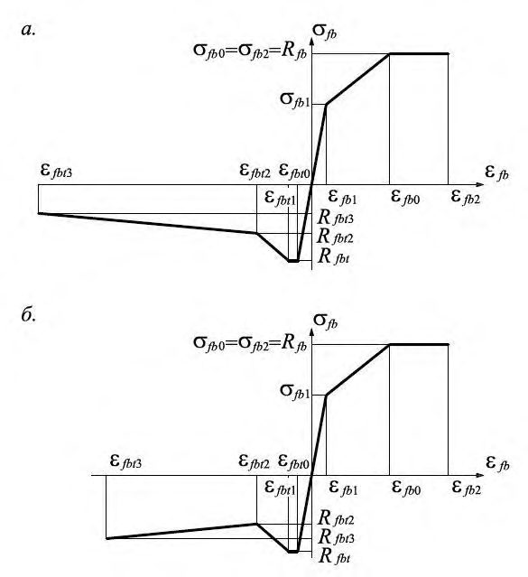
а - при Rfbt 3 / Rfbt 2 < 1 ; б - при Rfbt 3 / Rfbt 2 > 1
Рисунок 1 - Диаграммы деформирования сталефибробетона при сжатии и растяжении:
6Сталефибробетонные конструкции без предварительного напряжения арматуры
Расчет по прочности элементов конструкций на действие изгибающих моментов и продольных сил
Общие положения
Расчет по прочности нормальных сечений элементов следует производить на основе нелинейной деформационной модели согласно 6.1.18 - 6.1.25.
Расчет по прочности нормальных сечений элементов прямоугольного, таврового и двутаврового сечений без рабочей арматуры или с арматурой, расположенной у верхней и нижней граней сечения, допускается производить по предельным усилиям.
Расчет по прочности нормальных сечений по предельным усилиям
- сопротивление сталефибробетона растяжению представляется напряжениями, равными Rfbt 3 и равномерно распределенными по растянутой зоне сталефибробетона;
- сопротивление сталефибробетона сжатию представляется напряжениями, равными Rfb и равномерно распределенными по сжатой зоне сталефибробетона;
- деформации (напряжения) в арматуре определяют в зависимости от высоты сжатой зоны сталефибробетона;
- растягивающие напряжения в стержневой арматуре принимают не более расчетного сопротивления растяжению Rs ;
- сжимающие напряжения в стержневой арматуре принимают не более расчетного сопротивления сжатию Rsc .
- эпюру напряжений в сжатой зоне фибробетона принимают треугольной формы, как для упругого тела;
- эпюру напряжений в растянутой зоне фибробетона трапециевидной формы с напряжениями в растянутой грани сечения, равными Rfbt ;
- относительную деформацию крайнего растянутого волокна бетона принимают равной fbt 1.
- относительной высоты сжатой зоны сталефибробетона определяемым из 0 , x h = соответствующих условий равновесия, и значением граничной относительной высоты сжатой зоны R , при котором предельное состояние элемента наступает одновременно с достижением в растянутой арматуре напряжения, равного расчетному сопротивлению Rs .
Значение R следует определять по формуле
где -характеристика сжатой зоны сталефибробетона, принимаемая для сталефибробетона из тяжелого бетона классов до В60 включительно равной 0,8, а для сталефибробетона из тяжелого бетона классов В70 - В100 и из мелкозернистого бетона - равной 0,7; ε s -расчетное значение предельных относительных деформаций арматуры, принимаемое по СП 63.13330; ε fb 2 - относительные деформации сжатого сталефибробетона при напряжениях Rfb , принимаемые по СП 63.13330 как для обычного бетона.
Расчет изгибаемых элементов
где М - изгибающий момент от внешней нагрузки;
Мult - предельный изгибающий момент, который может быть воспринят сечением элемента.
При расчете по прочности сечений изгибаемых элементов рекомендуется соблюдать условие x ≤ R h 0 .
В случае, когда по конструктивным соображениям или из расчета по предельным состояниям второй группы площадь растянутой стальной арматуры принята большей, чем это требуется для соблюдения условия x ≤ R h 0 , то значение предельного изгибающего момента определяют, принимая в формулах для его вычисления x = R h 0 , а вместо значения Rfbt 3 значение Rfbt 2.
- для сталефибробетонных элементов без рабочей арматуры (рисунок 2)
где Wpl - упругопластический момент сопротивления сечения элемента для крайнего растянутого волокна, определяемый с учетом 6.1.5; для элементов с прямоугольной формой сечения, изготовляемых из сталефибробетона класса по прочности на сжатие Bf 60 и ниже, допускается принимать равным:
- для фибробетонных элементов с рабочей арматурой (рисунок 3) при R h x ξ ξ 0 =
при этом высоту сжатой зоны определяют по формуле
Рисунок 2 - Схема усилий и эпюра напряжений в сечении, нормальном к продольной оси изгибаемого сталефибробетонного элемента прямоугольного сечения без арматуры при его расчете по прочности
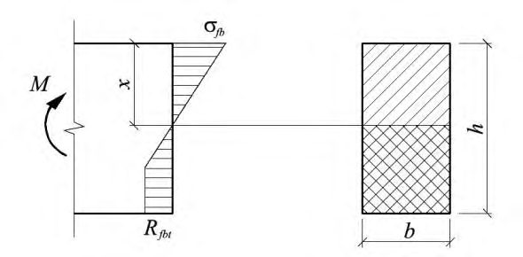
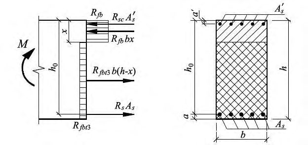
Рисунок 3 - Схема усилий и эпюра напряжений в сечении, нормальном к продольной оси изгибаемого сталефибробетонного элемента прямоугольного сечения с арматурой, при его расчете по прочности
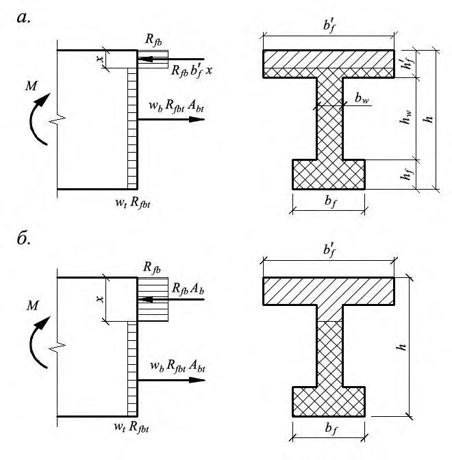
- для сталефибробетонных элементов без рабочей арматуры - по формуле (6.3), в которой Wpl определяют с учетом 6.1.5 и формы поперечного сечения элемента.
Значение Мult допускается определять: а) если граница проходит в полке (рисунок 4, а), т. е. соблюдается условие
5): по формуле
при этом высоту сжатой зоны определяют по формуле
б) если граница проходит в ребре (рисунок 4, б), т. е. условие (6.7) не соблюдается, по формуле
при этом высоту сжатой зоны определяют по формуле
- для сталефибробетонных элементов с рабочей арматурой при R h x ξ ξ 0 = (рисунок а) если граница проходит в полке (рисунок 5, а), т. е. соблюдается условие
значение Мult определяют по формуле
при этом высоту сжатой зоны определяют по формуле
б) если граница проходит в ребре (рисунок 5, б), т. е. условие (6.12) не соблюдается, значение Мult определяют по формуле
при этом высоту сжатой зоны сталефибробетона х определяют по формуле
Значение f b , вводимое в расчет, принимают по СП 63.13330.
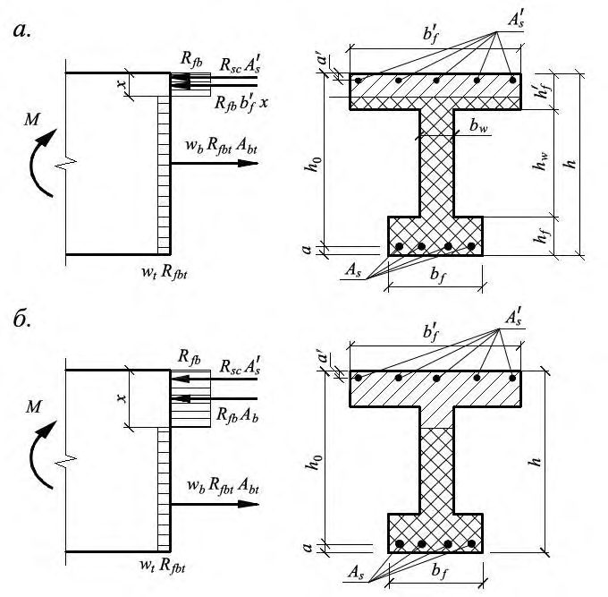
а - в полке; б - в ребре
Рисунок 4 - Положение границы сжатой зоны в сечении изгибаемого сталефибробетонного элемента без арматуры
Рисунок 5 - Положение границы сжатой зоны в сечении изгибаемого сталефибробетонного элемента с арматурой
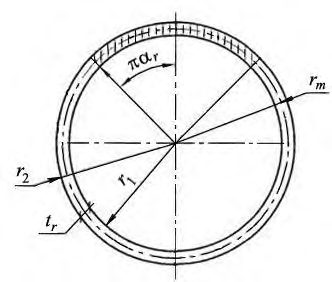
где Ar -общая площадь кольцевого сечения, определяемая по формуле
rm -радиус срединной поверхности стенки кольцевого элемента определяемый по формуле
r 1 и r 2 -радиусы соответственно внутренней и наружной граней кольцевого сечения;
Рисунок 6 -Схема кольцевого сечения сталефибробетонного элемента, принимаемая при его расчете по прочности на изгиб
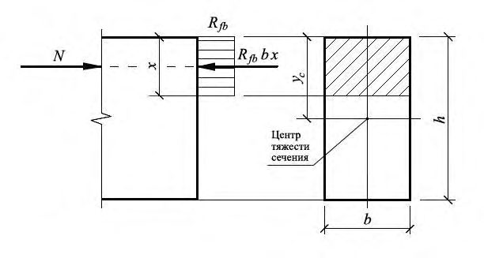
В случае, когда по конструктивным соображениям или из расчета по предельным состояниям второй группы площадь растянутой арматуры принята большей, чем это требуется для соблюдения условия x ≤ R h 0 , допускается предельный изгибающий момент Мult определять по формуле (6.5) или (6.15), подставляя в нее значение высоты сжатой зоны x = R h 0 .
Расчет внецентренно сжатых элементов
- где N - действующая продольная сила; - площадь сжатой зоны бетона, определяемая из условия, что ее центр тяжести
Аb совпадает с точкой приложения продольной силы N (с учетом прогиба).
Рисунок 7 Схема усилий и эпюра напряжений в сечении, нормальном к продольной оси внецентренно сжатого сталефибробетонного элемента, рассчитываемого по прочности без учета сопротивления сталефибробетона растянутой зоны
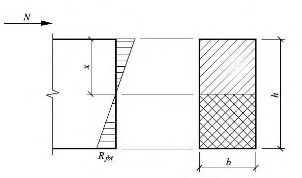
Для элементов прямоугольного сечения
где е 0 - случайный эксцентриситет, принимаемый по СП 63.13330.2018; η - коэффициент, учитывающий влияние продольного изгиба (прогиба) элемента на его несущую способность и определяемый по формуле
где Ncr - условная критическая сила, определяемая по формуле
здесь D -жесткость элемента в предельной по прочности стадии, определяемая по формуле
где Efb - модуль упругости сталефибробетона; I -момент инерции площади поперечного сечения элемента относительно оси, проходящей через его центр тяжести;
здесь φ l - коэффициент, учитывающий влияние длительности действия нагрузки, определяют по формуле
где M 1, Ml 1 - моменты относительно наиболее растянутой или наименее сжатой (при целиком сжатом сечении) грани сечения соответственно от действия полной нагрузки и от действия постоянных и длительных нагрузок; δ е - относительное значение эксцентриситета продольной силы e 0/ h , принимаемое не менее 0,15 и не более 1,5.
Расчет внецентренно сжатых сталефибробетонных элементов прямоугольного сечения при эксцентриситете продольной силы е 0 ≤ h /30 и l 0 20 h допускается производить из условия
где А - площадь поперечного сечения элемента; φ - коэффициент, при длительном действии нагрузки принимаемый по таблице 3 в зависимости от гибкости l 0 / h элемента; при кратковременном действии нагрузки значения φ определяют по линейному закону, принимая: φ = 0,9 при l 0 / h =10; φ = 0,85 при l 0 / h =20, где l 0 - расчетная длина элемента, определяемая по СП 63.13330 как для железобетонных элементов.
Таблица 3
| l 0 /h | 6 | 10 | 15 | 20 |
|---|---|---|---|---|
| | 0,92 | 0,90 | 0,80 | 0,60 |
Рисунок 8 - Схема усилий и эпюра напряжений в сечении, нормальном к продольной оси внецентренно сжатого сталефибробетонного элемента, рассчитываемого по прочности с учетом сопротивления сталефибробетона растянутой зоны
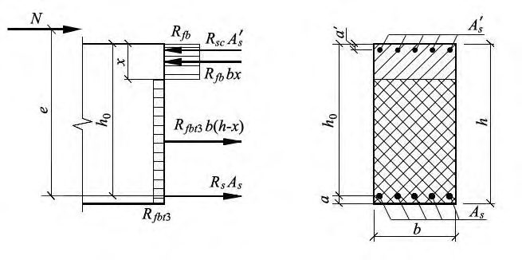
Для элементов прямоугольного сечения условие (6.29) имеет вид:
В формулах (6.29) - (6.30):
Rfbt - расчетное сопротивление сталефибробетона осевому растяжению;
- А - площадь поперечного сечения сталефибробетонного элемента;
- I - момент инерции сечения сталефибробетонного элемента относительно его центра тяжести;
- уt - расстояние от центра тяжести сечения сталефибробетонного элемента до наиболее растянутого волокна;
- - коэффициент, определяемый по 6.1.13, при этом в формуле (6.24) значение жесткости элемента в предельной по прочности стадии определяют по формуле
- где I , I s - моменты инерции площадей сечения сталефибробетона и всей продольной арматуры соответственно относительно оси, проходящей через центр тяжести поперечного сечения элемента.
где N - продольная сила от внешней нагрузки; е - расстояние от точки приложения продольной силы N до центра тяжести сечения растянутой арматуры
здесь е 0 - случайный эксцентриситет, принимаемый по СП 63.13330; η - коэффициент, определяемый по 6.1.13.
Высоту сжатой зоны х определяют: при R h x ξ ξ 0 = (рисунок 9) - по формуле
при R h x ξ ξ 0 = - по формуле
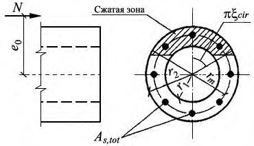
Рисунок 9 - Схема усилий и эпюра напряжений в сечении, нормальном к продольной оси внецентренно сжатого сталефибробетонного элемента с рабочей арматурой, при расчете ее по прочности
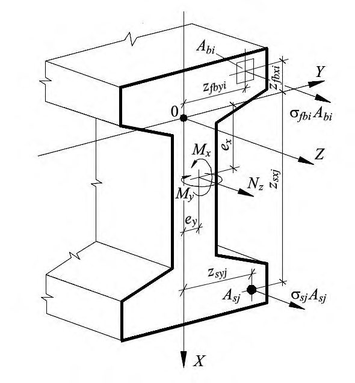
Расчет по прочности прямоугольных сечений внецентренно сжатых сталефибробетонных элементов с арматурой, расположенной у противоположных в плоскости изгиба сторон сечения, при эксцентриситете продольной силы и гибкости 0 30 h e допускается производить из условия 0 20 l h
где Nult - предельное значение продольной силы, которую может воспринять элемент, определяемое по формуле
здесь А - площадь сталефибробетонного сечения;
Аs,tot - площадь всей продольной арматуры в сечении элемента; φ - коэффициент, при длительном действии нагрузки принимаемый по таблице 4 в зависимости от гибкости элемента; при кратковременном действии нагрузки значения φ определяют по линейному закону, принимая: φ = 0,9 при l 0 /h
φ = 0,85 при l 0 /h = 20.
Таблица 4
| Класс сталефибробетона B f | при l 0 /h, равном | при l 0 /h, равном | при l 0 /h, равном | при l 0 /h, равном |
|---|---|---|---|---|
| Класс сталефибробетона B f | 6 | 10 | 15 | 20 |
| В f 20 - В f 55 | 0,92 | 0,90 | 0,83 | 0,70 |
| В f 60 | 0,91 | 0,89 | 0,80 | 0,65 |
| В f 80 | 0,90 | 0,88 | 0,79 | 0,64 |
где Аr , rт - см. 6.1.10.
При этом значение относительной площади сжатой зоны сталефибробетона определяется по формуле
Если полученное из расчета по формуле (6.39) значение r < 0,15, в условие (6.38) подставляется значение r , определяемое по формуле
а) при 0,15 < cir < 0,6 - из условия
б) при cir 0,15 - из условия
где в) при cir 0,6 - из условия где
В формулах (6.41) - (6.45):
As,tot -площадь сечения всей продольной арматуры; rm - радиус срединной поверхности стенки кольцевого элемента, определяемый по формуле (6.19); rs - радиус окружности, проходящей через центры тяжести стержней продольной арматуры.
Момент М определяется с учетом влияния прогиба элемента.
Рисунок 10 -Схема, принимаемая при расчете кольцевого сечения сжатого элемента
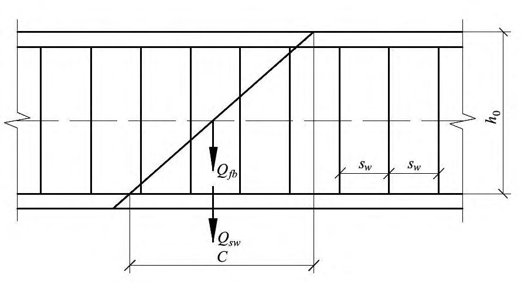
Расчет по прочности нормальных сечений на основе нелинейной деформационной модели
- распределение относительных деформаций сталефибробетона и арматуры по высоте сечения элемента принимают по линейному закону (гипотеза плоских сечений);
- связь между осевыми напряжениями и относительными деформациями сталефибробетона и арматуры принимают в виде диаграмм состояния (деформирования) сталефибробетона и арматуры.
Переход от эпюры напряжений в сталефибробетоне к обобщенным внутренним усилиям определяют с помощью процедуры численного интегрирования напряжений по нормальному сечению. Для этого нормальное сечение условно разделяют на малые участки: при косом внецентренном сжатии (растяжении) и косом изгибе - по высоте и ширине сечения; при внецентренном сжатии (растяжении) и изгибе в плоскости оси симметрии поперечного сечения элемента - только по высоте сечения. Напряжения в пределах малых участков принимают равномерно распределенными (усредненными).
- значения сжимающей продольной силы, сжимающих напряжений и деформаций укорочения сталефибробетона и арматуры со знаком «минус»;
- значения растягивающей продольной силы, растягивающих напряжений и деформаций удлинения сталефибробетона и арматуры со знаком «плюс».
Знаки координат центров тяжести арматурных стержней и выделенных участков сталефибробетона, а также точки приложения продольной силы принимают в соответствии с назначенной системой координат ХОY. В общем случае начало координат этой системы располагают в произвольном месте в пределах поперечного сечения элемента (рисунок 11).
Рисунок 11 - Расчетная схема нормального сечения элемента
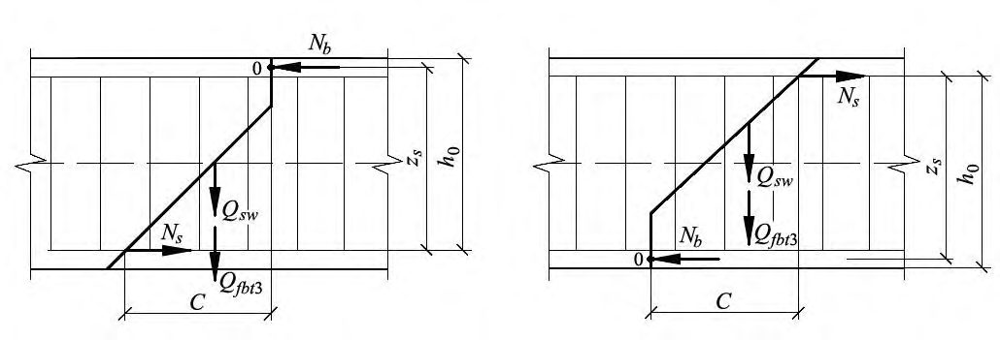
- уравнения равновесия внешних сил и внутренних усилий в нормальном сечении элемента:
i j
i j
- уравнения, определяющие распределение деформаций по сечению элемента:
- зависимости, связывающие напряжения и относительные деформации сталефибробетона и арматуры:
В уравнениях (6.46) - (6.52):
- Mx , My - изгибающие моменты от внешней нагрузки относительно выбранных и располагаемых в пределах поперечного сечения элемента координатных осей (соответственно действующих в плоскостях ХОZ и УОZ или параллельно им), определяемые по формулам:
где Mxd , Myd - изгибающие моменты в соответствующих плоскостях от внешней нагрузки, определяемые из статического расчета конструкции;
N - продольная сила от внешней нагрузки; ex , ey -расстояния от точки приложения продольной силы N до соответствующих выбранных осей;
Abi , Zfbxi , Zfby i , σ fbi -площадь, координаты центра тяжести i -го участка сталефибробетона и напряжение на уровне его центра тяжести;
Asj, Zsxj , Zsyj , σ sj - площадь, координаты центра тяжести j -го стержня арматуры и напряжение в нем; ε0 - относительная деформация волокна, расположенного на пересечении выбранных осей (в точке 0); y x r r 1 , 1 - кривизны продольной оси в рассматриваемом поперечном сечении элемента в плоскостях действия изгибающих моментов Мх и Му ;
Еfb - начальный модуль упругости сталефибробетона;
Еsj - модуль упругости jго стержня арматуры; ν sj - коэффициент упругости j -го стержня арматуры; ν fbi - коэффициент упругости сталефибробетона i -го участка.
Значения коэффициентов sj принимают по соответствующим диаграммам состояния арматуры, приведенным в СП 63.13330.
Значения коэффициентов fbi определяют как соотношение значений напряжений и деформаций для рассматриваемых точек принятых в расчете диаграмм осевого сжатия или растяжения сталефибробетона, деленное на модуль упругости сталефибробетона Efb (при двухлинейной диаграмме состояния сжатого сталефибробетона - на приведенный модуль деформации сжатого сталефибробетона Efb,red ):
где fb,max - относительная деформация наиболее сжатого волокна сталефибробетона в нормальном сечении элемента от действия внешней нагрузки;
s,max - относительная деформация наиболее растянутого стержня арматуры в нормальном сечении элемента от действия внешней нагрузки;
fb,ult - предельное значение относительной деформации сталефибробетона при сжатии, принимаемое согласно указаниям 6.1.25;
s,ult -предельное значение относительной деформации удлинения арматуры, принимаемое согласно 6.1.25.
Жесткостные характеристики Dij ( i,j = 1,2,3) в системе уравнений (6.58) - (6.60) определяют по формулам:
i j
i j
i j
i j
Обозначения в формулах - см. 6.1.20.
Для внецентренно сжатых в плоскости симметрии поперечного сечения элементов и расположении оси Х в этой плоскости в уравнениях (6.58) - (6.60) принимают Му =0 и D 12= D 22 =D 23=0. В этом случае уравнения равновесия имеют вид:
Для изгибаемых в плоскости симметрии поперечного сечения элементов и расположения оси Х в этой плоскости в уравнениях (6.58) - (6.60) принимают N= 0 , My= 0 , D 12 =D 22 =D 23=0. В этом случае уравнения равновесия имеют вид:
Для изгибаемых и внецентренно сжатых сталефибробетонных элементов без рабочей арматуры, в которых не допускаются трещины, расчет производят с учетом работы растянутого сталефибробетона в поперечном сечении элемента из условия
где ε fbt ,max - относительная деформация наиболее растянутого волокна сталефибробетона в нормальном сечении элемента от действия внешней нагрузки, определяемая согласно 6.1.22 - 6.1.23; ε fbt , ult - предельное значение относительной деформации сталефибробетона при растяжении, принимаемое согласно 6.1.25.
При внецентренном сжатии или растяжении элементов и распределении в поперечном сечении элемента деформаций только одного знака предельные значения относительных деформаций сталефибробетона ε fb , ult и ε fbt , ult определяют в зависимости от соотношения деформаций сталефибробетона на противоположных гранях сечения элемента ε1 и ε2 по формулам: ( ) 2 1
где ε fb 2 и ε fb 0 -деформационные параметры расчетных диаграмм состояния сталефибробетона при сжатии, принимаемые согласно СП 63.13330 для аналогичного класса обычного бетона; ε fbt 2 и ε fbt 3 -деформационные параметры расчетных диаграмм состояния сталефибробетона при растяжении, принимаемые согласно 5.2.9.
При расчете изгибаемых, внецентренно сжатых или внецентренно растянутых сталефибробетонных элементов, в которых не допускаются трещины, значение ε fbt,ult в условии (6.71) принимают:
- при двузначной эпюре деформаций (сжатие и растяжение) в поперечном сечении сталефибробетона элемента равными ε fbt 1;
- при распределении в поперечном сечении элемента деформаций сталефибробетона только одного знака значению, вычисленному по формуле (6.73), в которую вместо значений параметров ε fbt 2 и ε fbt 3 подставляют значения параметров соответственно ε fbt 0 и ε fbt 1.
Предельные значения относительной деформации арматуры εs,ult принимают равными:
0,025 - для арматуры с физическим пределом текучести;
0,015 - для арматуры с условным пределом текучести.
Расчет по прочности сталефибробетонных элементов при действии поперечных сил
Общие положения
Расчет элементов по полосе между наклонными сечениями
где Q - поперечная сила в рассматриваемом нормальном сечении элемента.
Расчет элементов по наклонным сечениям на действие поперечных сил
где Q - поперечная сила в наклонном сечении с длиной проекции С на продольную ось элемента, определяемая от всех внешних сил, расположенных по одну сторону от
(6.74) рассматриваемого наклонного сечения; при этом учитывают наиболее опасное нагружение в пределах наклонного сечения;
Qfb - поперечная сила, воспринимаемая сталефибробетоном в наклонном сечении;
Qsw - поперечная сила, воспринимаемая поперечной арматурой в наклонном сечении.
Поперечную силу
Qfb определяют по формуле
но принимают не более 2,5 Rfbt b h 0 и не менее 0,5 Rfbt b h 0.
Рисунок 12 - Схема усилий при расчете элементов по наклонному сечению на действие поперечных сил
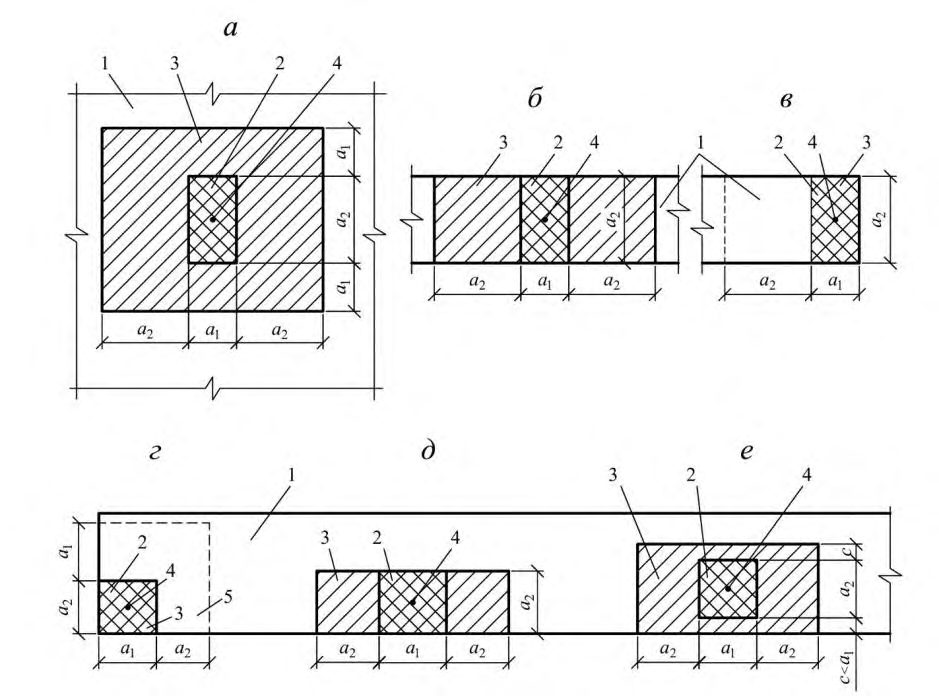
Усилие Qsw для поперечной арматуры, нормальной к продольной оси элемента, определяют по формуле
где qsw - усилие в поперечной арматуре на единицу длины элемента, определяемое по формуле
Расчет производят для ряда расположенных по длине элемента наклонных сечений при наиболее опасной длине проекции наклонного сечения С . При этом длину проекции С в формуле (6.77) принимают не менее 1,0 h 0 и не более 2,0 h 0.
Поперечную арматуру учитывают в расчете, если соблюдается условие qsw ≥ 0,25 Rfbt b .
Шаг учитываемой в расчете поперечной арматуры 0 h s w должен быть не больше
При отсутствии поперечной арматуры или нарушении приведенных выше требований расчет производят из условий (6.75), принимая усилие Q sw равным нулю.
Расчет элементов по наклонным сечениям на действие моментов
где М - момент в наклонном сечении с длиной проекции С на продольную ось элемента, определяемый от всех внешних сил, расположенных по одну сторону от рассматриваемого наклонного сечения, относительно конца наклонного сечения (точка 0), противоположного концу, у которого располагается проверяемая продольная арматура, испытывающая растяжение от момента в наклонном сечении; при этом учитывают наиболее опасное нагружение в пределах наклонного сечения; Мs - момент, воспринимаемый продольной арматурой, пересекающей наклонное сечение, относительно противоположного конца наклонного сечения (точка 0); Мsw - момент, воспринимаемый поперечной арматурой, пересекающей наклонное сечение, относительно противоположного конца наклонного сечения (точка 0); относительно
Мfbt -момент, воспринимаемый сталефибробетоном, противоположного конца наклонного сечения (точка 0). Момент Мs определяют по формуле
где Ns - усилие в продольной растянутой арматуре, принимаемое равным Rs As ; zs - плечо внутренней пары сил; допускается принимать zs = 0,9 h 0.
Момент Мsw для поперечной арматуры, нормальной к продольной оси элемента, определяют по формуле
- где Qsw - усилие в поперечной арматуре, принимаемое равным qfw C ; qsw - определяют по формуле (6.78), а С принимают в пределах от h 0 до 2 h 0.
Момент Мfbt определяют по формуле
где Qfbt 3 определяют по формуле (6.76), подставляя в нее вместо характеристики Rfbt значение характеристики Rfbt 3.
Расчет производят для наклонных сечений, расположенных по длине элемента на его концевых участках и в местах обрыва продольной арматуры, при наиболее опасной длине проекции наклонного сечения С , принимаемой в пределах от h 0 до 2 h 0.
Рисунок 13 - Схема усилий при расчете элементов по наклонному сечению на действие моментов
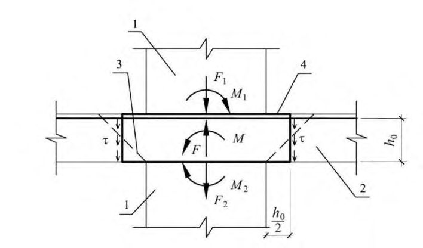
При наличии косвенной арматуры в зоне местного сжатия учитывают дополнительное повышение сопротивления сжатию сталефибробетона под грузовой площадью за счет сопротивления косвенной арматуры.
Расчет элементов на местное сжатие при отсутствии косвенной арматуры производят согласно 6.1.32, а при наличии косвенной арматуры - согласно 6.1.33.
где N - местная сжимающая сила от внешней нагрузки;
- коэффициент, принимаемый равным 1,0 при равномерном и 0,75 при неравномерном распределении местной нагрузки по площади смятия;
Rfb,loc - расчетное сопротивление сталефибробетона сжатию при местном действии сжимающей силы;
Afb,loc - площадь приложения сжимающей силы (площадь смятия).
Значение Rfb , loc определяют по формуле
где fb - коэффициент, определяемый по формуле
но принимаемый не более 2,5 и не менее 1,0. В формуле (6.85):
Аfb, max - максимальная расчетная площадь, устанавливаемая по следующим правилам:
- центры тяжести площадей Аfb,loc и Аfb, max совпадают;
- границы расчетной площади Аb, max отстоят от каждой стороны площади Аfb,loc на расстояния, равные соответствующим размерам этих сторон (рисунок 14).
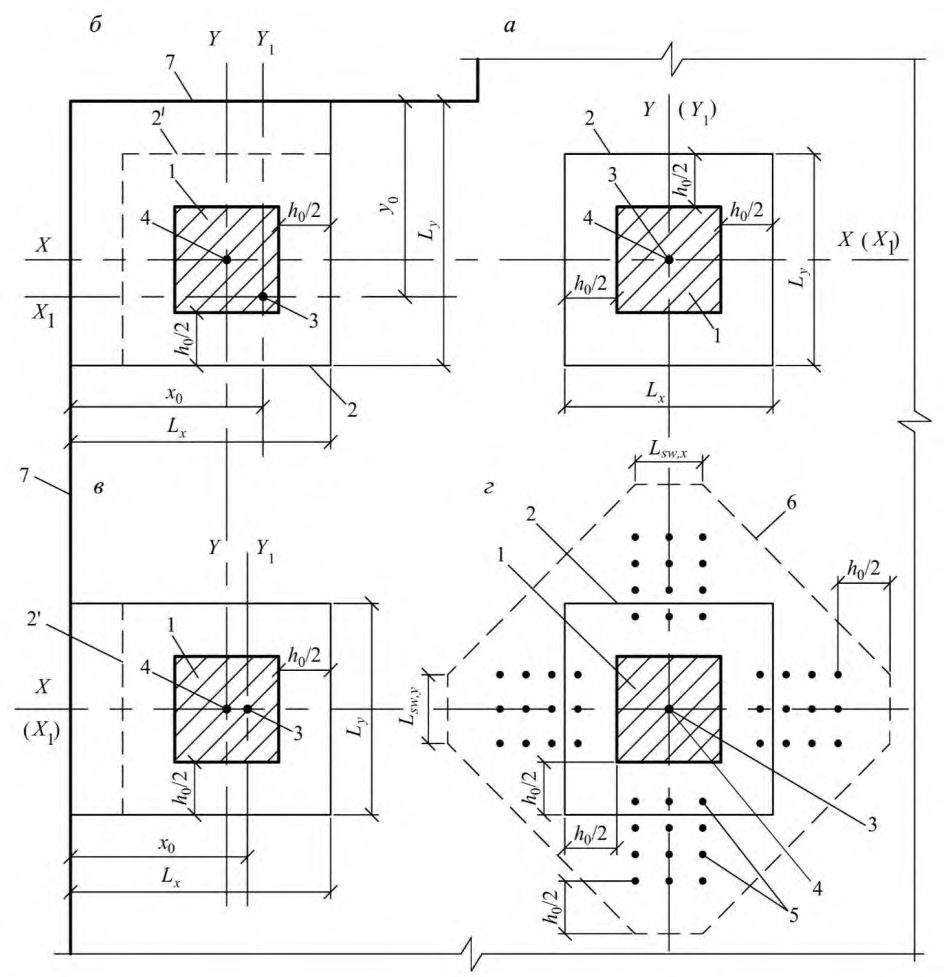
- а - вдали от краев элемента; б - по всей ширине элемента; в - у края (торца) элемента по всей его ширине; г - на углу элемента; д - у одного края элемента; е - вблизи одного края элемента;
1 - элемент, на который действует местная нагрузка; 2 - площадь смятия Аfb , loc ; 3 - максимальная расчетная площадь Аfb ,max; 4 - центр тяжести площадей Аfb , loc и Аfb ,max; 5 - минимальная зона армирования сетками, при которой косвенное армирование учитывается в расчете
Рисунок 14 - Схемы для расчета сталефибробетонных элементов на местное сжатие при различном положении местной нагрузки
где Rfbs,loc - приведенное с учетом косвенной арматуры в зоне местного сжатия расчетное сопротивление сталефибробетона сжатию, определяемое по формуле
где s,xy - коэффициент, определяемый по формуле
где Afb , loc , ef - площадь, заключенная внутри контура сеток косвенного армирования, считая по их крайним стержням, принимаемая в формуле (6.88) не более Аfb ,max;
Rs , xy - расчетное сопротивление растяжению косвенной арматуры;
s , xy - коэффициент косвенного армирования, определяемый по формуле
где nx , Asx , l x - число стержней, площадь сечения и длина стержня сетки, считая в осях крайних стержней, в направлении Х, соответственно; ny , Asy , l y - то же, в направлении Y ; s - шаг сеток косвенного армирования.
Значения Rfb,loc , Аb,loc , и N принимают согласно 6.1.32.
Значение местной сжимающей силы, воспринимаемое элементом с косвенным армированием (правая часть условия (6.86)), принимают не более удвоенного значения местной сжимающей силы, воспринимаемого элементом без косвенного армирования (правая часть условия (6.83)).
Косвенное армирование должно соответствовать конструктивным требованиям, приведенным в СП 63.13330.
Расчет сталефибробетонных элементов на продавливание
При расчете на продавливание рассматривают расчетное поперечное сечение, расположенное вокруг зоны передачи усилий на элемент на расстоянии нормально к его 0 2 h продольной оси, по поверхности которого действуют касательные усилия от сосредоточенных силы и изгибающего момента (рисунок 15).
Действующие касательные усилия по площади расчетного поперечного сечения должны быть восприняты сталефибробетоном с сопротивлением сталефибробетона осевому растяжению Rft и поперечной арматурой, расположенной от грузовой площадки на расстоянии не более h 0 и не менее , с сопротивлением растяжению Rsw . 0 3 h
При действии сосредоточенной силы касательные усилия, воспринимаемые сталефибробетоном и арматурой, принимают равномерно распределенными по всей площади расчетного поперечного сечения. При действии изгибающего момента касательные усилия, воспринимаемые сталефибробетоном и поперечной арматурой, принимают линейно изменяющимися по длине расчетного поперечного сечения в направлении действия момента с максимальными касательными усилиями противоположного знака у краев расчетного поперечного сечения в этом направлении.
1 - колонна; 2 - плита; 3 - пирамида продавливания; 4 - условный расчетный контур Рисунок 15 - Условная модель для расчета на продавливание
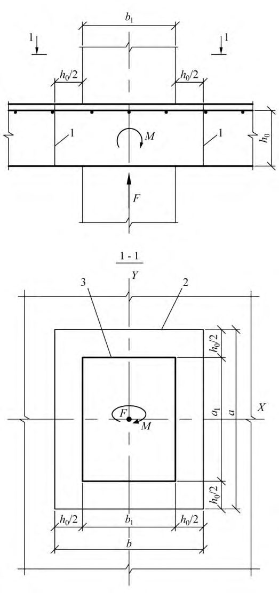
Расчет на продавливание при действии сосредоточенной силы и отсутствии поперечной арматуры производят согласно 6.1.35, при действии сосредоточенной силы и наличии поперечной арматуры - согласно 6.1.36, при действии сосредоточенных силы и изгибающего момента и отсутствии поперечной арматуры - согласно 6.1.37 и при действии сосредоточенных силы и изгибающего момента и наличии поперечной арматуры - согласно 6.1.39.
Расчетный контур поперечного сечения принимают: при расположении площадки передачи нагрузки внутри плоского элемента - замкнутым и расположенным вокруг площадки передачи нагрузки (рисунок 16, а , г ), при расположении площадки передачи нагрузки у края или угла плоского элемента - в виде двух вариантов: замкнутым и расположенным вокруг площадки передачи нагрузки, и незамкнутым, следующим от краев плоского элемента (рисунок 16, б , в ), в этом случае учитывают наименьшую несущую способность при двух вариантах расположения расчетного контура поперечного сечения.
В случае расположения отверстия в плите на расстоянии менее 6 h от угла или края площадки передачи нагрузки до угла или края отверстия, часть расчетного контура, расположенная между двумя касательными к отверстию, проведенными из центра тяжести площадки передачи нагрузки, в расчете не учитывается.
При действии момента Мloc в месте приложения сосредоточенной нагрузки половину этого момента учитывают при расчете на продавливание, а другую половину - при расчете по нормальным сечениям по ширине сечения, включающей ширину площадки передачи нагрузки и высоту сечения плоского элемента по обе стороны от площадки передачи нагрузки.
При действии сосредоточенных моментов и силы в условиях прочности соотношение между действующими сосредоточенными моментами М , учитываемыми при продавливании, и предельными Мult принимают не более половины соотношения между действующим сосредоточенным усилием F и предельным Fult .
При расположении сосредоточенной силы внецентренно относительно центра тяжести контура расчетного поперечного сечения значения изгибающих сосредоточенных моментов от внешней нагрузки определяют с учетом дополнительного момента от внецентренного приложения сосредоточенной силы относительно центра тяжести контура расчетного поперечного сечения с положительным или обратным знаком по отношению к моментам в колонне.
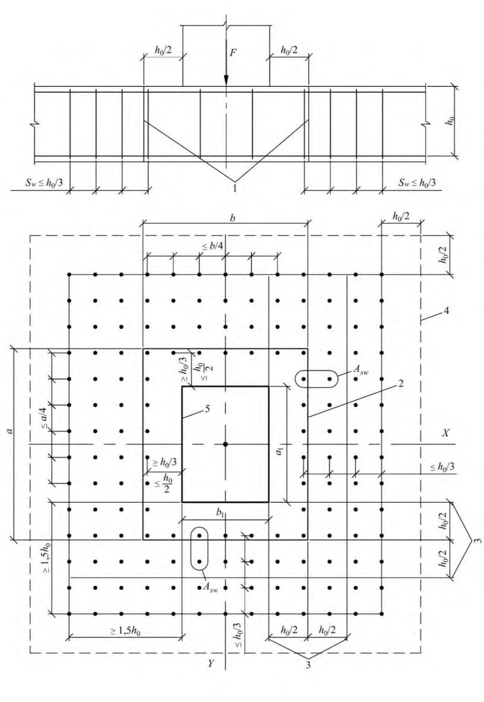
а
- площадка приложения нагрузки внутри плоского элемента;
, б в
- то же, у края плоского элемента;
- г - при крестообразном расположении поперечной арматуры;
1 -площадь приложения нагрузки; 2 -расчетный контур поперечного сечения; 2 - второй вариант расположения расчетного контура; 3 - центр тяжести расчетного контура (место пересечения осей X 1 и Y 1); 4 - центр тяжести площадки приложения нагрузки (место пересечения осей X и Y ); 5 - поперечная арматура; 6 - контур расчетного поперечного сечения без учета в расчете поперечной арматуры; 7 - граница (край) плоского элемента
Рисунок 16 - Схема расчетных контуров поперечного сечения при продавливании
Расчет элементов на продавливание при действии сосредоточенной силы
F ≤ Ffb , ult
- где F
Ffb , ult Усилие Ffb , ult определяют по формуле
- сосредоточенная сила от внешней нагрузки; - предельное усилие, воспринимаемое сталефибробетоном.
где Аfb - площадь расчетного поперечного сечения, расположенного на расстоянии 0,5 h 0 от границы площади приложения сосредоточенной силы F с рабочей высотой сечения h 0 (рисунок 17).
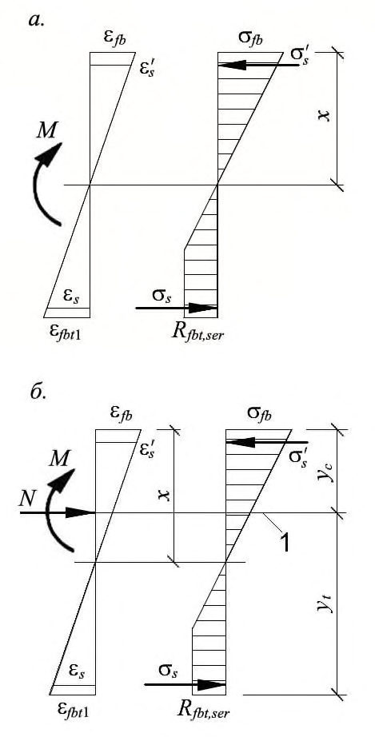
1 - расчетное поперечное сечение; 2 - контур расчетного поперечного сечения; 3 - контур площадки приложения нагрузки
Рисунок 17 - Схема для расчета сталефибробетонных элементов без поперечной арматуры на продавливание
Площадь Afb определяют по формуле
где u - периметр контура расчетного поперечного сечения; h 0 - приведенная рабочая высота сечения h 0 = 0,5( h 0 x + h 0 y ), h 0 x и h 0 y - рабочая высота сечения для продольной арматуры, расположенной в направлении осей Х и Y .
где Fsw , ult - предельное усилие, воспринимаемое поперечной арматурой при продавливании;
Ffb , ult - предельное усилие, воспринимаемое сталефибробетоном, определяемое согласно 6.1.35.
Усилие Fsw,ult , воспринимаемое поперечной арматурой, нормальной к продольной оси элемента и расположенной равномерно вдоль контура расчетного поперечного сечения, определяют по формуле
где qsw - усилие в поперечной арматуре на единицу длины контура расчетного поперечного сечения, расположенной в пределах расстояния 0,5 h 0 по обе стороны от контура расчетного сечения
здесь Asw - площадь сечения поперечной арматуры с шагом s w, расположенная в пределах расстояния 0,5 h 0 по обе стороны от контура расчетного поперечного сечения по периметру контура расчетного поперечного сечения; u - периметр контура расчетного поперечного сечения.
При расположении поперечной арматуры не равномерно по контуру расчетного поперечного сечения, а сосредоточенно у осей площадки передачи нагрузки (крестообразное расположение поперечной арматуры) периметр контура u для поперечной арматуры принимают по фактическим длинам участков расположения поперечной арматуры Lswx и Lswy по расчетному контуру продавливания (рисунок 18, г ).
Значение Ffb , ult + Fsw , ult принимают не более 2 Ffb , ult . Поперечную арматуру учитывают в расчете при Fsw , ult не менее 0,25 Ffb , ult .
За границей расположения поперечной арматуры расчет на продавливание производят согласно 6.1.35, рассматривая контур расчетного поперечного сечения на расстоянии 0,5 h 0 от границы расположения поперечной арматуры (рисунок 18). При сосредоточенном расположении поперечной арматуры по осям площадки передачи нагрузки, кроме того, расчетный контур поперечного сечения сталефибробетона принимают по диагональным линиям, следующим от края расположения поперечной арматуры (рисунок 16, г ).
Поперечная арматура должна удовлетворять конструктивным требованиям, приведенным в СП 63.13330, при нарушении которых в расчете на продавливание следует учитывать только поперечную арматуру, пересекающую пирамиду продавливания, при обеспечении условий ее анкеровки.
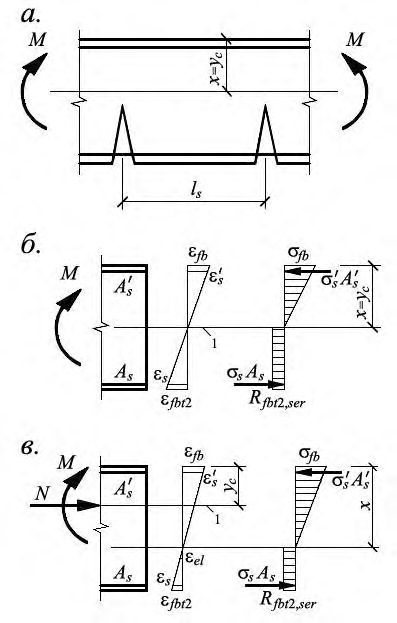
1 -расчетное поперечное сечение; 2 -контур расчетного поперечного сечения; 3 - границы зоны, в пределах которых в расчете учитывается поперечная арматура; 4 - контур расчетного поперечного сечения без учета в расчете поперечной арматуры; 5 - контур площадки приложения нагрузки
Рисунок 18 - Схема для расчета сталефибробетонных плит с вертикальной равномерно распределенной поперечной арматурой на продавливание
Расчет элементов на продавливание при действии сосредоточенных силы и изгибающего момента
где F - сосредоточенная сила от внешней нагрузки;
M - сосредоточенный изгибающий момент от внешней нагрузки, учитываемый при расчете на продавливание (6.1.34);
Ffb,ult и Mfb,ult - предельные сосредоточенные сила и изгибающий момент, которые могут быть восприняты сталефибробетоном в расчетном поперечном сечении при их раздельном действии.
В каркасных зданиях с плоскими перекрытиями сосредоточенный изгибающий момент Mloc равен суммарному изгибающему моменту в сечениях верхней и нижней колонн, примыкающих к перекрытию в рассматриваемом узле.
Предельный изгибающий момент Mfb,ult определяют по формуле
где Wfb - момент сопротивления расчетного поперечного сечения, определяемый согласно 6.1.39.
При действии изгибающих моментов в двух взаимно перпендикулярных плоскостях расчет производят из условия
где F , Mx и My - сосредоточенные сила и изгибающие моменты в направлениях осей Х и Y , учитываемые при расчете на продавливание (6.1.34), от внешней нагрузки;
Ffb,ult , Mfb,x,ult , Mfb,y,ult - предельные сосредоточенные сила и изгибающие моменты в направлениях осей Х и Y , которые могут быть восприняты сталефибробетоном в расчетном поперечном сечении при их раздельном действии.
Усилие Ffb,ult определяют согласно 6.1.35.
Усилия Mfb,x,ult и Mfb,y,ult определяют согласно указаниям, приведенным выше, при действии момента в плоскости осей Х и Y соответственно.
где F , Mx и My - см. 6.1.37;
Ffb,ult , Mfb,x,ult и Mfb,y,ult - предельные сосредоточенные сила и изгибающие моменты в направлениях осей Х и Y , которые могут быть восприняты сталефибробетоном в расчетном поперечном сечении при их раздельном действии;
Fsw,ult , Msw,x,ult и Msw,y,ult - предельные сосредоточенные сила и изгибающие моменты в направлениях осей Х и Y , которые могут быть восприняты поперечной арматурой при их раздельном действии.
Усилия Ffb,ult , Mfb,x,ult , Мfb,y,ult и Fsw,ult определяют согласно 6.1.36 и 6.1.37.
Усилия Msw,x,ult и Msw,y,ult , воспринимаемые поперечной арматурой, нормальной к продольной оси элемента и расположенной равномерно вдоль контура расчетного сечения, определяют при действии изгибающего момента, соответственно в направлении осей Х и Y по формуле
где qsw и Wsw - определяют согласно 6.1.36 и 6.1.40.
Значения Ffb , ult + Fsw , ult , Mfbx , ult + Msw , x , ult , Mfby , ult + Msw , y , ult в условии (6.99) принимают не более 2 Ffb , ult , 2 Mfb,x , ult , 2 Mfb,y , ult соответственно.
Поперечная арматура должна соответствовать конструктивным требованиям, приведенным в СП 63.13330, при нарушении которых в расчете на продавливание следует учитывать только поперечную арматуру, пересекающую пирамиду продавливания, при обеспечении условий ее анкеровки.
где Ifbx ( y ) - момент инерции расчетного контура относительно оси Y 1 или Х 1, проходящей через его центр тяжести (рисунок 16); x ( y )max - максимальное расстояние от расчетного контура до его центра тяжести.
Значение момента инерции Ifbx ( y ) определяют как сумму моментов инерции Ifbx ( y ) i отдельных участков расчетного контура поперечного сечения относительно центральных осей, проходящих через центр тяжести расчетного контура, принимая условно ширину каждого участка равной единице.
Положение центра тяжести расчетного контура относительно выбранной оси определяют по формуле
где Li - длина отдельного участка расчетного контура; xi ( yi )0 - расстояние от центров тяжести отдельных участков расчетного контура до выбранных осей.
При расчетах принимают наименьшие значения моментов сопротивления Wfbx и Wfby . 6.1.40 Значения моментов сопротивления поперечной арматуры при продавливании Wsw , x ( y ) в том случае, когда поперечная арматура расположена равномерно вдоль расчетного контура продавливания в пределах зоны, границы которой отстоят на расстоянии в 0 2 h каждую сторону от контура продавливания сталефибробетона (рисунок 18), принимают равными соответствующим значениям Wfbx и Wfby .
При расположении поперечной арматуры в плоском элементе сосредоточенно по осям грузовой площадки, например, по оси колонн (крестообразное расположение поперечной арматуры в перекрытии), моменты сопротивления поперечной арматуры определяют по тем же правилам, что и моменты сопротивления сталефибробетона, принимая соответствующую фактическую длину ограниченного участка расположения поперечной арматуры по расчетному контуру продавливания Lswx и Lswy (рисунок 16, г ).
6.2Расчет элементов сталефибробетонных конструкций по предельным состояниям второй группы
- расчет по образованию трещин;
- расчет по раскрытию трещин;
- расчет по деформациям.
Расчет сталефибробетонных элементов по образованию и раскрытию трещин
- где М - изгибающий момент от внешней нагрузки относительно оси, нормальной к плоскости действия момента и проходящей через центр тяжести приведенного поперечного сечения элемента;
Мcrc - изгибающий момент, воспринимаемый нормальным сечением элемента при образовании трещин, определяемый по формуле (6.107).
Непродолжительное раскрытие трещин определяют от совместного действия постоянных и временных (длительных и кратковременных) нагрузок, продолжительное только от постоянных и временных длительных нагрузок.
где acrc - ширина раскрытия трещин от действия внешней нагрузки, определяемая согласно 6.2.7, 6.2.14 - 6.2.16; acrc,ult - предельно допустимая ширина раскрытия трещин.
Значения acrc,ult принимают равными: а) из условия обеспечения сохранности арматуры:
- классов А240…А600, В500:
- 0,3 мм - при продолжительном раскрытии трещин;
- 0,4 мм - при непродолжительном раскрытии трещин;
- классов А800, А1000, Вр1200-Вр1400, К1400, К1500 (К-19) и К1500 (К-7), К1600 диаметром 12 мм:
- 0,2 мм - при продолжительном раскрытии трещин;
- 0,3 мм - при непродолжительном раскрытии трещин;
- классов Вр1500, К1500 (К-7), К1600 диаметром 6 и 9 мм:
- 0,1 мм - при продолжительном раскрытии трещин;
- 0,2 мм - при непродолжительном раскрытии трещин; б) из условия ограничения проницаемости конструкций (допускается для сталефибробетонных конструкций с комбинированным армированием арматурой классов А240…А600, В500):
- 0,2 мм - при продолжительном раскрытии трещин;
- 0,3 мм - при непродолжительном раскрытии трещин.
Ширину продолжительного раскрытия трещин определяют по формуле
а ширину непродолжительного раскрытия трещин - по формуле
(6.105)
(6.106)
- где acrc 1 - ширина раскрытия трещин от продолжительного действия постоянных и временных длительных нагрузок; acrc 2 - ширина раскрытия трещин от непродолжительного действия постоянных и временных (длительных и кратковременных) нагрузок; acrc 3 - ширина раскрытия трещин от непродолжительного действия постоянных и временных длительных нагрузок.
Определение момента образования трещин, нормальных к продольной оси элемента
Для элементов прямоугольного, таврового или двутаврового сечения с арматурой, расположенной у верхней и нижней граней, момент трещинообразования с учетом неупругих деформаций растянутого сталефибробетона допускается определять согласно 6.2.10 - 6.2.12.
- сечения после деформирования остаются плоскими;
- эпюру напряжений в сжатой зоне сталефибробетона принимают треугольной формы, как для упругого тела (рисунок 19);
- эпюру напряжений в растянутой зоне сталефибробетона принимают трапециевидной формы с напряжениями, не превышающими расчетных значений сопротивления сталефибробетона растяжению Rfbt,ser ;
- относительную деформацию крайнего растянутого волокна сталефибробетона принимают равной fbt 1;
- напряжения в арматуре принимают в зависимости от относительных деформаций как для упругого тела.
- где Wpl - упругопластический момент сопротивления сечения для крайнего растянутого волокна сталефибробетона, определяемый с учетом 6.2.10;
- ех - расстояние от точки приложения продольной силы N (расположенной в центре тяжести приведенного сечения элемента) до ядровой точки, наиболее удаленной от растянутой зоны, трещинообразование которой проверяется.
В формуле (6.107) знак «плюс» принимают при сжимающей продольной силе N , «минус» - при растягивающей силе.
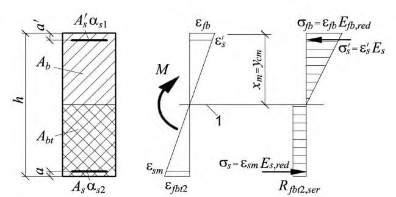
Рисунок 19 - Схема напряженно-деформированного состояния сечения элемента при проверке образования трещин при действии изгибающего момента ( а ) и изгибающего момента и продольной силы ( б )
Для элементов с прямоугольной формой сечения, изготовляемых из сталефибробетона класса по прочности на сжатие Bf 60 и ниже, значение Wpl при действии момента в плоскости оси симметрии допускается принимать равным
где Wred - упругий момент сопротивления приведенного сечения по его растянутой зоне, определяемый в соответствии с 6.2.12.
где Ired - момент инерции приведенного сечения элемента относительно его центра тяжести, определяемый по формуле
здесь I , I s , I' s - моменты инерции сечений сталефибробетона, растянутой арматуры и сжатой арматуры соответственно;
Ared - площадь приведенного поперечного сечения элемента, определяемая по формуле
здесь - коэффициент приведения арматуры к сталефибробетону
- площади поперечного сечения сталефибробетона, растянутой и сжатой арматуры соответственно; , , s s A A A yt - расстояние от наиболее растянутого волокна сталефибробетона до центра тяжести приведенного поперечного сечения элемента
здесь St,red - статический момент площади приведенного поперечного сечения элемента относительно наиболее растянутого волокна сталефибробетона.
Допускается момент сопротивления Wred определять без учета арматуры.
Значение Mcrc определяют из решения системы уравнений, приведенных в 6.1.20 и условия (6.56), принимая в нем относительную деформацию сталефибробетона fbt, max у растянутой грани элемента от действия внешней нагрузки, равной предельному значению относительной деформации сталефибробетона при растяжении fbt,ult , определяемому согласно 6.1.25.
Расчет ширины раскрытия трещин, нормальных к продольной оси элемента
где φ1 - коэффициент, учитывающий продолжительность действия нагрузки, принимаемый равным:
- 1,0 - при непродолжительном действии нагрузки;
- 1,4 - при продолжительном действии нагрузки;
s - коэффициент, учитывающий неравномерное распределение относительных деформаций растянутой арматуры между трещинами; допускается принимать коэффициент s = 1; если при этом условие (6.104) не удовлетворяется, то значение s следует определять по формуле (6.125);
s - напряжение в продольной растянутой арматуре в нормальном сечении c трещиной от соответствующей внешней нагрузки, определяемое согласно 6.2.15;
- φ3 - коэффициент, учитывающий характер нагружения, принимаемый равным:
- 1,0 - для элементов изгибаемых и внецентренно сжатых;
- 1,2 - для растянутых элементов; l s - базовое (без учета влияния вида поверхности арматуры) расстояние между смежными нормальными трещинами, определяемое согласно 6.2.16.
где Ired , yc - момент инерции и высота сжатой зоны приведенного поперечного сечения элемента, определяемые с учетом площади сечения cжатой и растянутой зон сталефибробетона, площадей сечения растянутой и сжатой арматуры согласно 6.2.26, принимая в соответствующих формулах значения коэффициентов приведения арматуры и сталефибробетона растянутой зоны к сталефибробетону сжатой зоны равными
здесь Efb , red - приведенный модуль деформации сжатого сталефибробетона, учитывающий неупругие деформации сжатого сталефибробетона и определяемый по формуле
определяют по формуле (6.136).
Efbt,red -
Относительную деформацию сталефибробетона ε fb 1, red принимают равной 0,0015.
Для изгибаемых элементов yc=x (рисунок 20), где х - высота сжатой зоны сталефибробетона, определяемая согласно 6.2.27 с учетом (6.117).
Допускается напряжение s определять по формуле
- площадь растянутой зоны сечения элемента; zbt - расстояние от точки приложения равнодействующей усилий в растянутой зоне элемента до точки приложения равнодействующей усилий в сжатой зоне элемента; zs - расстояние от центра тяжести растянутой арматуры до точки приложения где Abt равнодействующей усилий в сжатой зоне элемента.
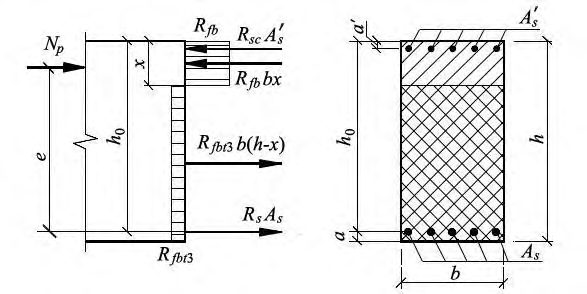
1 - уровень центра тяжести приведенного поперечного сечения
Рисунок 20 - Схема напряженно-деформированного состояния элемента с трещинами при действии изгибающего момента (а, б), изгибающего момента и продольной силы (в)
Для элементов прямоугольного поперечного сечения при отсутствии (или без учета) сжатой арматуры значения zs и zbt (6.119) определяют по формулам:
При действии изгибающего момента M и продольной силы N напряжение s в растянутой арматуре определяют по формуле
где Ared , yc - площадь приведенного поперечного сечения элемента и расстояние от наиболее сжатого волокна сталефибробетона до центра тяжести приведенного сечения, определяемые по общим правилам расчета геометрических характеристик сечений упругих элементов с учетом площадей сечения cжатой и растянутой зон сталефибробетона, площадей сечения растянутой и сжатой арматуры согласно 6.2.27, принимая коэффициенты приведения арматуры и сталефибробетона растянутой зоны к сталефибробетону сжатой зоны по (6.117).
Напряжение s допускается определять по формуле
где еs - расстояние от центра тяжести растянутой арматуры до точки приложения продольной силы N с учетом эксцентриситета, равного . M
N
Для элементов прямоугольного сечения при отсутствии (или без учета) сжатой арматуры значения zs и zbt в (6.122) допускается определять по формулам (6.120), в которые вместо x следует подставлять - высоту сжатой зоны сталефибробетона с учетом влияния продольной силы, определяемую согласно 6.2.27, принимая коэффициенты приведения арматуры и сталефибробетона растянутой зоны к сталефибробетону по (6.117). x m
В формулах (6.121) и (6.122) знак «плюс» принимают при растягивающей, а знак «минус» при сжимающей продольной силе.
Напряжения s не должны превышать значений расчетных сопротивлений арматуры растяжению для предельных состояний второй группы Rs,ser .
и принимают не более h .
В формуле (6.123): kf - коэффициент, принимаемый равным:
где df и l f - диаметр и длина фибры; φ2 - коэффициент, учитывающий профиль продольной арматуры, принимаемый равным:
- 0,5 - для арматуры периодического профиля;
- 0,8 - для гладкой арматуры;
- φ3 - коэффициент, учитывающий характер нагружения, принимаемый равным:
- 0,5 - для элементов изгибаемых и внецентренно сжатых;
- 1,0 - для растянутых элементов;
- ds - номинальный диаметр арматуры;
fv - коэффициент фибрового армирования по объему.
Если при проведении расчетов значение коэффициента fv не установлено, то в формулу (6.123) подставляют его минимально допустимое значение, определяемое по формуле (8.4).
Значения Abt определяют по высоте растянутой зоны сталефибробетона xt , используя правила расчета момента образования трещин согласно 6.2.8 - 6.2.13.
- где σ s,crc - напряжение в продольной растянутой арматуре в сечении с трещиной сразу после образования нормальных трещин, определяемое по 6.2.15, принимая в соответствующих формулах значения M = Mcrc ; σ s - то же, при действии рассматриваемой нагрузки.
Для изгибаемых элементов значение коэффициента ψ s допускается определять по формуле
где Mcrc определяют по формуле (6.107).
Расчет элементов сталефибробетонных конструкций по деформациям
Расчет по деформациям следует производить на действие:
- постоянных, временных длительных и кратковременных нагрузок при ограничении деформаций технологическими или конструктивными требованиями;
- постоянных и временных длительных нагрузок при ограничении деформаций эстетическими требованиями.
Расчет сталефибробетонных элементов по прогибам
где f - прогиб сталефибробетонного элемента от действия внешней нагрузки; f ult - значение предельно допустимого прогиба сталефибробетонного элемента.
Прогибы сталефибробетонных конструкций определяют по общим правилам строительной механики в зависимости от изгибных, сдвиговых и осевых деформационных характеристик сталефибробетонного элемента в сечениях по его длине (кривизн, углов сдвига и т. д.).
В тех случаях, когда прогибы сталефибробетонных элементов в основном зависят от изгибных деформаций, значения прогибов определяют по жесткостным характеристикам согласно 6.2.21 и 6.2.30.
Определение кривизны сталефибробетонных элементов
- для элементов или участков элемента, где в растянутой зоне не образуются нормальные к продольной оси трещины - согласно 6.2.23 и 6.2.25; для элементов или участков элемента, где в растянутой зоне образуются трещины согласно 6.2.23, 6.2.24 и 6.2.26.
Элементы или участки элементов рассматривают без трещин, если трещины не образуются [т. е. условие (6.103) не выполняется] при действии полной нагрузки, включающей постоянную, временную длительную и кратковременную нагрузки.
Кривизну сталефибробетонных элементов с трещинами и без трещин можно также определять на основе деформационной модели согласно 6.2.31.
- для участков без трещин в растянутой зоне
- для участков с трещинами в растянутой зоне
В формуле (6.127):
кратковременных нагрузок и от продолжительного действия постоянных и временных длительных нагрузок.
В формуле (6.128):
- кривизна от непродолжительного действия всей нагрузки, на которую 1 1 r производят расчет по деформациям;
- кривизна от непродолжительного действия постоянных и временных 2 1 r длительных нагрузок;
- кривизна от продолжительного действия постоянных и временных длительных 3 1 r нагрузок.
где М - изгибающий момент от внешней нагрузки (с учетом момента от продольной силы N ) относительно оси, нормальной плоскости действия изгибающего момента и проходящей через центр тяжести приведенного поперечного сечения элемента;
D - изгибная жесткость приведенного поперечного сечения элемента, определяемая по формуле
здесь Efb 1 - модуль деформации сжатого сталефибробетона, определяемый в зависимости от продолжительности действия нагрузки и с учетом наличия или отсутствия трещин;
Ired - момент инерции приведенного поперечного сечения относительно его центра тяжести, определяемый с учетом наличия или отсутствия трещин.
Значения модуля деформации сталефибробетона Eb 1 и момента инерции приведенного сечения Ired для элементов без трещин в растянутой зоне и с трещинами определяют по 6.2.25 и 6.2.26 соответственно.
Жесткость сталефибробетонного элемента на участке без трещин в растянутой зоне
Момент инерции Ired приведенного поперечного сечения элемента относительно его центра тяжести определяют как для сплошного тела по общим правилам сопротивления упругих элементов с учетом всей площади сечения сталефибробетона и площадей сечения арматуры с коэффициентом приведения арматуры к сталефибробетону по формуле
где I - момент инерции сталефибробетонного сечения относительно центра тяжести приведенного поперечного сечения элемента;
I s , I' s - моменты инерции площадей сечения соответственно растянутой и сжатой арматуры относительно центра тяжести приведенного поперечного сечения элемента; α - коэффициент приведения арматуры к сталефибробетону, определяемый по формуле
Значение I определяют по общим правилам расчета геометрических характеристик сечений упругих элементов.
Момент инерции Ired допускается определять без учета арматуры.
Значения модуля деформации сталефибробетона Efb 1 в формулах (6.130), (6.132) принимают равными:
- при непродолжительном действии нагрузки
- при продолжительном действии нагрузки
где φ b , cr - принимают по СП 63.13330.2012.
Жесткость сталефибробетонного элемента на участке с трещинами в растянутой зоне.
- сечения после деформирования остаются плоскими;
- напряжения в сталефибробетоне сжатой зоны определяют как для упругого тела;
- напряжения в сталефибробетоне растянутой зоны в сечении с нормальной трещиной определяют с учетом нелинейных свойств;
- работу растянутого сталефибробетона на участке между смежными нормальными трещинами учитывают посредством коэффициента ψ s .
Жесткость сталефибробетонного элемента D на участках с трещинами определяют по формуле (6.130) и принимают не более жесткости без трещин.
Значение модуля деформации сжатого сталефибробетона Efb 1 принимают равным значению приведенного модуля деформации Efb,red , определяемого по формуле
в которой значения относительных деформаций fb 1, red принимают равными:
- при непродолжительном действии нагрузки fb 1, red = 0,0015;
- при продолжительном действии нагрузки - по СП 63.13330.2012 (таблица 30). Значение модуля деформации растянутого сталефибробетона Efbt 1 принимают равным значению приведенного модуля деформации Efbt,red , определяемого по формуле
где fbt 2 - предельные относительные деформации сталефибробетона при растяжении, принимаемые по 5.2.9.
Момент инерции приведенного поперечного сечения элемента Ired относительно его центра тяжести определяют с учетом:
- площади сечения сталефибробетона сжатой зоны;
- площади сечения сталефибробетона растянутой зоны с условным коэффициентом приведения к сталефибробетону сжатой зоны fbt ;
- площади сечения сжатой арматуры с коэффициентом приведения арматуры к сталефибробетону сжатой зоны α s 1;
- площади растянутой арматуры с коэффициентом приведения арматуры к сталефибробетону сжатой зоны α s 2.
где Ifb , Ifbt , Is , - моменты инерции площадей сечения соответственно сжатой и растянутой зоны сталефибробетона, растянутой и сжатой арматуры относительно центра тяжести приведенного поперечного сечения. s I
Значения Ifbt , Is , определяют по общим правилам сопротивления материалов, принимая расстояние от наиболее сжатого волокна сталефибробетона до центра тяжести приведенного поперечного сечения без учета сталефибробетона растянутой зоны (рисунок 21); для изгибаемых элементов s I
- где xm - средняя высота сжатой зоны сталефибробетона, учитывающая влияние работы растянутого сталефибробетона между трещинами и определяемая согласно 6.2.27 (рисунок 21).
Значения Ifb и ycm определяют по общим правилам расчета геометрических характеристик сечений упругих элементов.
Значения условного коэффициента приведения сталефибробетона растянутой зоны fbt и коэффициентов приведения арматуры к сталефибробетону αs1 и αs2 определяют по 6.2.29.
где Sfb 0, Sfbt 0, Ss 0 и 0 s S - статические моменты соответственно сжатой и растянутой зоны сталефибробетона, растянутой и сжатой арматуры относительно нейтральной оси.
Для прямоугольных сечений с растянутой и сжатой арматурой высоту сжатой зоны определяют по формуле
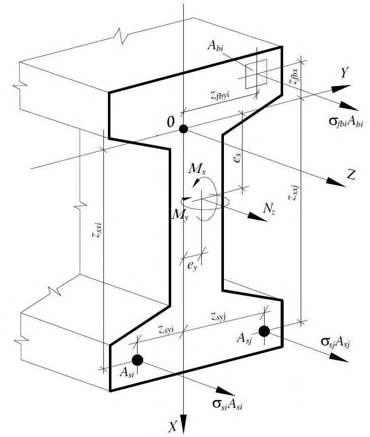
1 - уровень центра тяжести поперечного сечения
Рисунок 21 - Приведенное поперечное сечение и схема напряженнодеформированного состояния элемента с трещинами для расчета его по деформациям при действии изгибающего момента
Для внецентренно сжатых и внецентренно растянутых элементов положение нейтральной оси (высоту сжатой зоны) определяют из уравнения
где yN - расстояние от нейтральной оси до точки приложения продольной силы N , отстоящей от центра тяжести полного сечения (без учета трещин) на расстоянии ;
0 0 0 0 0 0 0 0 , , , , , , , s s fbt fb s s fbt fb S S S S I I I I - моменты инерции и статические моменты соответственно сжатой и растянутой зон сталефибробетона, растянутой и сжатой арматуры относительно нейтральной оси.
Допускается для элементов прямоугольного сечения высоту сжатой зоны при действии изгибающих моментов M и продольной силы N определять по формуле
где xM - высота сжатой зоны изгибаемого элемента, определяемая по формулам (6.139), (6.140);
Ired , Ared - момент инерции и площадь приведенного поперечного сечения, определяемые для полного сечения (без учета трещин).
Значения геометрических характеристик сечения элемента определяют по общим правилам расчета сечения упругих элементов.
В формуле (6.142) знак «плюс» принимают при сжимающей, а знак «минус» при растягивающей продольной силе.
- где z - расстояние от центра тяжести растянутой арматуры до точки приложения равнодействующей усилий в сжатой зоне.
Для элементов прямоугольного сечения при отсутствии (или без учета) сжатой арматуры значение z определяют по формуле
Для элементов прямоугольного, таврового (с полкой в сжатой зоне) и двутаврового поперечных сечений значение z допускается принимать равным 0,8 h 0.
Значения коэффициентов приведения арматуры к сталефибробетону принимают равными:
- для сжатой арматуры
- для растянутой арматуры где Efb , red и Efbt , red - определяют по 6.2.26;
Es , red - приведенный модуль деформации растянутой арматуры, определяемый с учетом влияния работы растянутого сталефибробетона между трещинами по формуле
Значения коэффициента s определяют по формуле (6.125).
Допускается принимать s = 1 и, следовательно, s 2 = s 1. При этом, если условие (6.126) не выполняется, расчет производят с учетом коэффициента s , определяемого по формуле (6.125).
При совместном действии кратковременной и длительной нагрузок полный прогиб элементов без трещин и с трещинами в растянутой зоне определяют путем суммирования прогибов от соответствующих нагрузок по аналогии с суммированием кривизн по 6.2.23, принимая жесткостные характеристики D в зависимости от продолжительности действия рассматриваемой нагрузки.
Допускается при определении жесткостных характеристик D элементов с трещинами в растянутой зоне принимать коэффициент s = 1. В этом случае при совместном действии кратковременной и длительной нагрузок полный прогиб изгибаемых элементов с трещинами определяют путем суммирования прогибов от непродолжительного действия кратковременной нагрузки и от продолжительного действия длительной нагрузки с учетом соответствующих значений жесткостных характеристик D , т. е. подобно тому, как это принято для элементов без трещин.
где
Определение кривизны сталефибробетонных элементов на основе нелинейной деформационной модели
Значения кривизн, входящих в формулы (6.127) и (6.128), определяют из решения системы уравнений (6.46) - (6.48). При этом для элементов с нормальными трещинами в растянутой зоне напряжение в арматуре, пересекающей трещины, определяют по формуле
здесь sj , crc - относительная деформация растянутой арматуры в сечении с трещиной сразу после образования нормальных трещин;
sj - усредненная относительная деформация растянутой арматуры, пересекающей трещины, в рассматриваемой стадии расчета.
При определении кривизн от непродолжительного действия нагрузки в расчете используют диаграммы кратковременного деформирования сжатого и растянутого сталефибробетона, а при определении кривизн от продолжительного действия нагрузки диаграммы длительного деформирования сталефибробетона с расчетными характеристиками для предельных состояний второй группы.
Для частных случаев действия внешней нагрузки (изгиб в двух плоскостях, изгиб в плоскости оси симметрии поперечного сечения элемента и т. п.) кривизны, входящие в формулы (6.127) и (6.128), определяют из решения систем уравнений, указанных в 6.1.20 6.1.23.
7Предварительно напряженные сталефибробетонные конструкции
7.1Предварительные напряжения арматуры
При натяжении арматуры на упоры следует учитывать:
- первые потери -от релаксации предварительных напряжений в арматуре, температурного перепада при термической обработке конструкций, деформации анкеров и деформации формы (упоров);
- вторые потери - от усадки и ползучести сталефибробетона.
При натяжении арматуры на сталефибробетон следует учитывать:
- первые потери - от деформации анкеров, трения арматуры о стенки каналов или поверхность конструкции;
- вторые потери - от релаксации предварительных напряжений в арматуре, усадки и ползучести сталефибробетона.
- для арматуры классов А600 - А1000 при способе натяжения:
- для арматуры классов Вр1200-Вр1500, К1400, К1500, К1600 при способе натяжения:
Здесь sp , МПа, принимается без потерь.
При отрицательных значениях sp 1 принимают sp 1 = 0.
При наличии более точных данных о релаксации арматуры допускается принимать иные значения потерь от релаксации.
При отсутствии точных данных по температурному перепаду допускается принимать t = 65°С.
При наличии более точных данных о температурной обработке конструкции допускается принимать иные значения потерь от температурного перепада.
где n - число стержней (групп стержней), натягиваемых неодновременно;
l - сближение упоров по линии действия усилия натяжения арматуры, определяемое из расчета деформации формы; l - расстояние между наружными гранями упоров.
При отсутствии данных о конструкции формы и технологии изготовления допускается принимать sp 3 = 30 МПа.
При электротермическом способе натяжения арматуры потери от деформации формы не учитываются.
- где l - обжатие анкеров или смещение стержня в зажимах анкеров; l - расстояние между наружными гранями упоров.
При отсутствии данных допускается принимать l = 2 мм.
При электротермическом способе натяжения арматуры потери от деформации анкеров не учитывают.
где e - основание натуральных логарифмов;
, - коэффициенты, определяемые по таблице 5; x - длина участка от натяжного устройства до расчетного сечения, м;
- суммарный угол поворота оси арматуры, рад; предварительные напряжения арматуры sp принимаются без потерь.
Таблица 5
| Значения коэффициентов для определения потерь от трения арматуры | Значения коэффициентов для определения потерь от трения арматуры | Значения коэффициентов для определения потерь от трения арматуры | |
|---|---|---|---|
| Канал или поверхность | , для арматуры в виде | , для арматуры в виде | |
| | пучков, канатов | стержней периодического профиля | |
| 1 Канал: - с металлической поверхностью - со сталефибробетонной | 0,0030 | 0,35 | 0,40 |
| поверхностью, образованный жестким каналообразователем | 0 | 0,55 | 0,65 |
| - со сталефибробетонной поверхностью, образованный гибким каналообразователем | 0,0015 | 0,55 | 0,65 |
| 2 Сталефибробетонная поверхность | 0 | 0,55 | 0,65 |
(7.9) где fb , sh - деформации усадки сталефибробетона, значения которых можно приближенно принимать в зависимости от класса бетона-матрицы равными:
0,0002 - для бетона-матрицы классов В35 и ниже;
0,00025 - для бетона-матрицы класса В40;
0,0003 - для бетона-матрицы классов В45 и выше.
Для сталефибробетона, подвергнутого тепловой обработке при атмосферном давлении, потери от усадки сталефибробетона sp 5 вычисляют по формуле (7.9) с умножением полученного результата на коэффициент, равный 0,85.
Потери от усадки сталефибробетона sp 5 при натяжении арматуры на сталефибробетон определяют по формуле (7.9) с умножением полученного результата независимо от условий твердения сталефибробетона на коэффициент, равный 0,75.
Допускается потери от усадки сталефибробетона определять более точными методами.
где b , cr - коэффициент ползучести бетона-матрицы, определяемый согласно СП 63.13330.2012;
fbpj - напряжения в сталефибробетоне на уровне центра тяжести рассматриваемой j -й группы стержней напрягаемой арматуры; ysj - расстояние между центрами тяжести сечения рассматриваемой группы стержней напрягаемой арматуры и приведенного поперечного сечения элемента;
Ared , Ired - площадь приведенного сечения элемента и ее момент инерции относительно центра тяжести приведенного сечения;
spj - коэффициент армирования, равный Aspj / A , где A и Aspj - площади поперечного сечения элемента и рассматриваемой группы стержней напрягаемой арматуры соответственно.
Для сталефибробетона, подвергнутого тепловой обработке, потери от ползучести вычисляют по формуле (7.10) с умножением полученного результата на коэффициент, равный 0,85.
Допускается потери от ползучести сталефибробетона определять более точными методами, учитывающими влияние фибрового армирования.
Напряжения fbpj определяют по правилам расчета упругих материалов, принимая приведенное сечение элемента, включающее площадь сечения сталефибробетона и площадь сечения всей продольной арматуры (напрягаемой и ненапрягаемой) с коэффициентом приведения арматуры к сталефибробетону fb s E E = α , согласно 7.1.10.
При fbpj < 0 принимается sp 5 = 0 и sp 6 = 0.
где i - номер потерь предварительного напряжения.
Усилие предварительного обжатия сталефибробетона с учетом первых потерь определяют по формуле
где Aspj и sp (1) j - площадь сечения j -й группы стержней напрягаемой арматуры в сечении элемента и предварительное напряжение в группе с учетом первых потерь определяют по формуле
здесь spj -начальное предварительное напряжение рассматриваемой группы стержней арматуры.
Полные значения первых и вторых потерь предварительного напряжения арматуры (по 7.1.3 - 7.1.8) определяют по формуле
Усилие в напрягаемой арматуре с учетом полных потерь определяют по формуле
где sp (2) j = spj - sp (2) j .
При проектировании конструкций полные суммарные потери sp (2) j для арматуры, расположенной в растянутой при эксплуатации зоне сечения элемента (основной рабочей арматуры), следует принимать не менее 100 МПа.
При определении усилия предварительного обжатия сталефибробетона Р с учетом полных потерь напряжений следует учитывать сжимающие напряжения в ненапрягаемой арматуре, численно равные сумме потерь от усадки и ползучести сталефибробетона на уровне этой арматуры.
При определении усилий обжатия с учетом ненапрягаемой арматуры на уровне ненапрягаемой арматуры, потери от ползучести на этом уровне принимают равными fbp fbs spj σ σ σ 6 , где spj 6 - потери от ползучести для стержней напрягаемой арматуры, ближайшей к рассматриваемой ненапрягаемой арматуре; fbs и fbp - напряжения в сталефибробетоне на уровне рассматриваемой ненапрягаемой и напрягаемой арматуры соответственно.
0,9 Rfbp - если напряжения уменьшаются или не изменяются при действии внешних нагрузок;
0,7 Rfbp - если напряжения увеличиваются при действии внешних нагрузок. Напряжения в сталефибробетоне fbp определяют по формуле
где P (1) - усилие предварительного обжатия с учетом первых потерь;
M - изгибающий момент от внешней нагрузки, действующий в стадии обжатия (собственный вес элемента); y - расстояние от центра тяжести сечения до рассматриваемого волокна; e 0 p - эксцентриситет усилия P (1) относительно центра тяжести приведенного поперечного сечения элемента.
но не менее 10 ds и 200 мм, а для арматурных канатов - также не менее 300 мм. В формуле (7.17):
sp - предварительное напряжение в напрягаемой арматуре с учетом первых потерь; Rbond - сопротивление сцепления напрягаемой арматуры с сталефибробетоном, соответствующее передаточной прочности сталефибробетона и определяемое согласно 8.3;
As , us - площадь и периметр стержня арматуры.
Передачу предварительного напряжения с арматуры на сталефибробетон рекомендуется осуществлять плавно.
7.2Расчет элементов предварительно напряженных сталефибробетонных конструкций по предельным состояниям первой группы
Расчет предварительно напряженных сталефибробетонных элементов по прочности
Общие положения
Расчет по прочности нормальных сечений в общем случае производят на основе нелинейной деформационной модели согласно 7.2.13 - 7.2.15.
Допускается расчет сталефибробетонных элементов прямоугольного, таврового и двутаврового сечений с арматурой, расположенной у перпендикулярных к плоскости изгиба граней элемента, при действии усилий в плоскости симметрии нормальных сечений производить на основе предельных усилий согласно 7.2.7 - 7.2.12.
Значения коэффициента sp принимают равными:
0,9 - при благоприятном влиянии предварительного напряжения;
- 1,1 - при неблагоприятном влиянии предварительного напряжения.
Расчет предварительно напряженных элементов на действие изгибающих моментов в стадии эксплуатации по предельным усилиям
Допускается принимать для растянутой арматуры с условным пределом текучести напряжения выше Rs , но не более 1,1 R s в зависимости от соотношения и R .
- для арматуры с условным пределом текучести
где sp - предварительное напряжение в арматуре с учетом всех потерь и sp = 0,9, МПа; - для ненапрягаемой арматуры с физическим пределом текучести
- при учете коэффициента условий работы сталефибробетона 500 sp -
Здесь значения приводят в МПа. sp
Значения определяют с коэффициентом sp = 1,1. sp
Во всех случаях напряжение sc принимают не более Rsc .
Расчет предварительно напряженных элементов в стадии предварительного обжатия
где и Asp - площади сечения напрягаемой арматуры, расположенной соответственно в наиболее обжатой и в растянутой (менее обжатой) зонах сечения; sp A
- предварительные напряжения с учетом первых потерь и коэффициента sp и sp sp =1,1 в арматуре с площадью сечения и Asp . sp A
где ep - расстояние от точки приложения продольной силы Np с учетом влияния изгибающего момента M от внешней нагрузки, действующей в стадии изготовления (собственная масса элемента), до центра тяжести сечения ненапрягаемой арматуры, растянутой или наименее сжатой (при полностью сжатом сечении элемента) от этих усилий (рисунок 22), определяемое по формуле
здесь e 0 p - расстояние от точки приложения силы Np до центра тяжести сечения элемента;
Rfb - расчетное сопротивление сталефибробетона сжатию, принимаемое по СП 63.13330.2012 по линейной интерполяции как для класса сталефибробетона по прочности на сжатие, численно равного передаточной прочности сталефибробетона Rfbp ;
Rfbt 3 - расчетное сопротивление сталефибробетона растяжению, принимаемое по линейной интерполяции по таблице 2 как для класса сталефибробетона по остаточной прочности на растяжение, численно равного передаточной прочности сталефибробетона на растяжение Rfbtp ;
Rsc - расчетное сопротивление ненапрягаемой арматуры сжатию, принимаемое в стадии предварительного обжатия не более 330 МПа;
- площадь сечения ненапрягаемой арматуры, расположенной в наиболее сжатой зоне сечения элемента. s A
Высоту сжатой зоны сталефибробетона определяют в зависимости от значения R , определяемого по формуле (6.1) с подстановкой в нее значения , где Rs - расчетное сопротивление растянутой ненапрягаемой арматуры As , и fb2 = 0,003: , s s el s R E = при (рисунок 22) по формуле 0 R x h =
при по формуле 0 R x h =
Рисунок 22 - Схема усилий и эпюра напряжений в сечении, нормальном к продольной оси изгибаемого предварительно напряженного элемента при его расчете по прочности в стадии обжатия
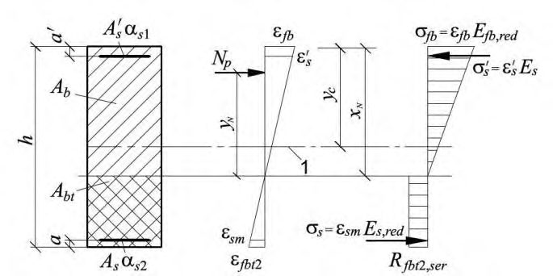
расчет производят из условия:
где e 0 p - см. 7.2.11; zs - расстояние от центра тяжести сечения элемента до растянутой (наименее сжатой) ненапрягаемой арматуры; высоту сжатой зоны x определяют:
б) если граница сжатой зоны проходит в ребре (рисунок 5, б ), т. е. условие (7.25) не соблюдается, расчет производят из условия
высоту сжатой зоны х определяют:
Расчет по прочности нормальных сечений на основе нелинейной деформационной модели
- уравнения равновесия внешних сил и внутренних усилий в нормальном сечении элемента:
- уравнения, определяющие распределение деформаций от действия внешней нагрузки по сечению элемента:
- зависимости, связывающие напряжения и относительные деформации сталефибробетона и арматуры:
- сталефибробетона
- ненапрягаемой арматуры
- напрягаемой арматуры
Рисунок 23 - Расчетная схема нормального сечения сталефибробетонного элемента с предварительно напряженной арматурой
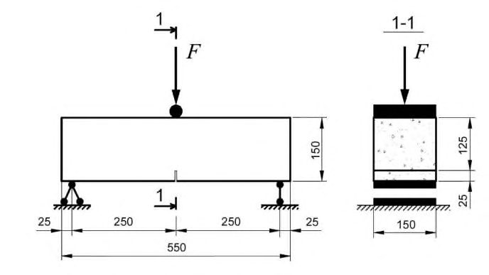
В уравнениях (7.33) - (7.41):
Asi , zsxi , zsyi , si - площадь, координаты центра тяжести i -го стержня напрягаемой арматуры и напряжение в нем;
si - относительная деформация i -го стержня напрягаемой арматуры от действия внешней нагрузки;
spi - относительная деформация предварительного напряжения арматуры, определяемая с учетом относительных деформаций от потерь предварительного напряжения, соответствующих рассматриваемой расчетной стадии;
Еsi - модуль упругости i -го стержня напрягаемой арматуры;
si - коэффициент упругости i -го стержня напрягаемой арматуры.
Остальные параметры - см. 6.1.20.
Значения коэффициентов fbi и sj определяют по 6.1.20, а значения коэффициентов si - по формуле
7.3Расчет предварительно напряженных сталефибробетонных элементов по предельным состояниям второй группы
Общие положения
- расчет по образованию трещин;
- расчет по раскрытию трещин;
- расчет по деформациям.
Требования по отсутствию трещин предъявляют к предварительно напряженным конструкциям, у которых при полностью растянутом сечении должна быть обеспечена непроницаемость (конструкции находящиеся под давлением жидкости или газов, испытывающие воздействие радиации и т. п.) к уникальным конструкциям, а также к конструкциям при воздействии сильно агрессивной среды.
Расчет предварительно напряженных сталефибробетонных элементов по образованию и раскрытию трещин
Определение момента образования трещин, нормальных к продольной оси элемента
Допускается момент образования трещин определять без учета неупругих деформаций растянутого сталефибробетона, принимая в формуле (7.43) Wpl=Wred . Если при этом условие (6.104) или (6.126) не удовлетворяется, то момент образования трещин следует определять с учетом неупругих деформаций растянутого сталефибробетона.
где Wpl - момент сопротивления приведенного сечения для крайнего растянутого волокна, определяемый с учетом 6.2.10; eхр = е 0 р + r - расстояние от точки приложения усилия предварительного обжатия P до ядровой точки, наиболее удаленной от растянутой зоны, трещинообразование которой проверяется; e 0 p - то же, до центра тяжести приведенного сечения; r - расстояние от центра тяжести приведенного сечения до ядровой точки, определяемое по формуле
В формуле (7.43) знак «плюс» принимают, когда направления вращения моментов P exp и внешнего изгибающего момента M противоположны; «минус» - когда направления совпадают.
Значения Wred и Ared определяют согласно 6.2.
Для прямоугольных сечений значение Wpl при действии момента в плоскости оси симметрии допускается определять по формуле (6.108).
Значение Mcrc определяют из решения системы уравнений, приведенных в 7.2.13 7.2.15, принимая относительную деформацию сталефибробетона bt, max у растянутой грани элемента от действия внешней нагрузки, равной предельному значению относительной деформации сталефибробетона при растяжении bt,ult , определяемому согласно 6.1.25.
Расчет ширины раскрытия трещин, нормальных к продольной оси элемента
где Ired , Ared , yc - момент инерции, площадь приведенного поперечного сечения элемента и расстояние от наиболее сжатого волокна до центра тяжести приведенного сечения, определяемые с учетом площади сечения сжатой и растянутой зон сталефибробетона, площадей сечения растянутой и сжатой арматуры согласно 6.2.25, принимая в соответствующих формулах значения коэффициентов приведения s 1 , s 2 и fbt по (6.117);
Np - усилие предварительного обжатия (см. 7.3.4);
Mp - изгибающий момент от внешней нагрузки и усилия предварительного обжатия, определяемый по формуле
здесь e 0 p - расстояние от точки приложения усилия предварительного обжатия Np до центра тяжести приведенного сечения.
Знак «минус» в формуле (7.46) принимают, когда направления вращений моментов M и Np e 0 p не совпадают, «плюс» - когда совпадают.
Допускается напряжение s определять по формуле
z - расстояние от центра тяжести арматуры, расположенной в растянутой зоне сечения, до точки приложения равнодействующей усилий в сжатой зоне элемента; Abt - площадь растянутой зоны сечения элемента; где zbt - расстояние от точки приложения равнодействующей усилий в растянутой зоне элемента до точки приложения равнодействующей усилий в сжатой зоне элемента; esp - расстояние от центра тяжести той же арматуры до точки приложения усилия Np . Для элементов прямоугольного поперечного сечения при отсутствии (или без учета) сжатой арматуры значение z определяют по формуле
Высоту сжатой зоны сечения xN элементов прямоугольного, таврового (с полкой в сжатой зоне) и двутаврового поперечного сечения допускается определять как для изгибаемых элементов без преднапряжения согласно 6.2.27 с умножением значения µs на . В первом приближении значение z допускается определять, принимая расстояние 1 p p N z M + от точки приложения равнодействующей усилий в сжатой зоне до наиболее сжатого волокна сечения равным 0,3 h 0.
Напряжения s , определяемые по формулам (7.45) и (7.47), не должны превышать ( Rs,ser - sp ).
Расчет предварительно напряженных сталефибробетонных элементов по деформациям
Допускается при определении кривизны учитывать влияние деформаций усадки и ползучести сталефибробетона в стадии предварительного обжатия.
где М - изгибающий момент от внешней нагрузки;
Np и e 0 p - усилие предварительного обжатия и его эксцентриситет относительно центра тяжести приведенного поперечного сечения элемента;
D - изгибная жесткость приведенного поперечного сечения элемента, определяемая по подразделу 6.2 как для внецентренно сжатого усилием предварительного обжатия элемента с учетом изгибающего момента от внешней нагрузки (рисунок 24).
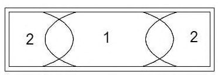
1 - уровень центра тяжести приведенного без учета растянутой зоны сталефибробетона поперечного сечения
Рисунок 24 - Приведенное поперечное сечение и схема напряженно-
деформированного состояния изгибаемого предварительно напряженного элемента с
трещинами при его расчете по деформациям
где zp - расстояние от точки приложения усилия предварительного обжатия до точки приложения равнодействующей усилий в сжатой зоне элемента; z - cм. формулу (7.47); xN - высота сжатой зоны с учетом влияния предварительного обжатия.
Высоту сжатой зоны определяют как для изгибаемых элементов без предварительного напряжения согласно 6.2.27 с умножением значения s на . 1 p N z + p M
Значения zp и z допускается определять, принимая расстояние от точки приложения равнодействующей усилий в сжатой зоне до наиболее сжатого волокна сечения равным 0,3 h 0.
Определение кривизны предварительно напряженных элементов на основе нелинейной деформационной модели
Значения кривизн, входящих в формулы (6.127) и (6.128), определяют из решения системы уравнений (7.33) - (7.41). При этом для элементов с нормальными трещинами в растянутой зоне напряжение в напрягаемой арматуре, пересекающей трещины, определяют по формуле
а в ненапрягаемой арматуре
здесь si ( j ), crc - относительная деформация растянутой арматуры в сечении с трещиной от действия внешней нагрузки сразу после образования трещин;
si ( j ) - усредненные относительные деформации растянутой арматуры, пересекающей трещины, в рассматриваемой стадии;
spi - относительная деформация предварительного напряжения арматуры.
При определении кривизны от непродолжительного действия нагрузки в расчете используют диаграммы кратковременного деформирования сжатого и растянутого сталефибробетона, а при определении кривизны от продолжительного действия нагрузки диаграммы длительного деформирования сталефибробетона с расчетными характеристиками для предельных состояний второй группы.
8КОНСТРУКТИВНЫЕ ТРЕБОВАНИЯ
- толщина плоских плит или полок ребристых плит сборных конструкций - не более 30 мм;
- толщина полок или стенок элементов - не менее 15 мм, а для плит междуэтажных перекрытий - не менее 30 мм;
- толщина плит или стенок тонкостенных конструкций - не менее 1/200 их свободного пролета.
- при вертикальном изготовлении конструкций ширина ребра по верху, включая вут, больше ширины ребра по низу на размер не менее 0,5 l f .
- сопряжение ребер конструкции с полками - по радиусу не менее 0,6 l f или с устройством вута с размером проекции не менее 0,75 l f .
0,08 % - в изгибаемых, внецентренно растянутых элементах и внецентренно сжатых элементах при гибкости 17 0 i l (для прямоугольных сечений 5 0 h l );
0,20 % -во внецентренно сжатых элементах при гибкости 87 0 i l (для ); прямоугольных сечений 25 0 h l для промежуточных значений гибкости элементов значение s определяют интерполяцией.
В элементах с продольной арматурой, расположенной равномерно по контуру сечения, а также в центрально-растянутых элементах минимальную площадь сечения всей продольной арматуры следует принимать вдвое больше приведенных выше значений и относить их к полной площади сечения сталефибробетона.
Минимальные значения толщины слоя сталефибробетона до стержневой рабочей арматуры следует принимать по таблице 6.
Таблица 6
| Условия эксплуатации конструкций зданий | Толщина защитного слоя сталефибробетона, мм, не менее |
|---|---|
| В закрытых помещениях при нормальной и пониженной влажности | 10 |
| В закрытых помещениях при повышенной влажности (при отсутствии дополнительных защитных мероприятий) | 15 |
| На открытом воздухе (при отсутствии дополнительных защитных мероприятий) | 25 |
| В грунте (при отсутствии дополнительных защитных мероприятий), в фундаментах при наличии бетонной подготовки | 35 |
Во всех случаях толщину защитного слоя сталефибробетона следует принимать равной диаметру стержня арматуры, уменьшенному на 10 мм, но не менее указанных в таблице 6.
Толщину защитного слоя сталефибробетона следует принимать с учетом требований по технологии изготовления конструкций.
- где As и us - площадь поперечного сечения анкеруемого стержня арматуры и периметр его сечения, определяемые по номинальному диаметру стержня;
Rbond - расчетное сопротивление сцепления арматуры с бетоном, принимаемое равномерно распределенным по длине анкеровки и определяемое по формуле но не более 20 мм. В формуле (8.5): df , red - приведенный диаметр фибры, определяемый по формуле (В.4) (приложение В); l f - длина фибры;
fv - коэффициент фибрового армирования по объему.
(8.2) здесь Rfbt - расчетное сопротивление сталефибробетона осевому растяжению; 1 и 2 - коэффициенты, учитывающие влияние вида поверхности и размера диаметра арматуры, принимаемые по СП 63.13330.
где df , red - приведенный диаметр фибры, определяемый по формуле (В.4) приложения В;
fv - коэффициент фибрового армирования по объему; kor - коэффициент ориентации, учитывающий ориентацию фибр в объеме элемента в зависимости от соотношения размеров сечения элемента и длины фибры, принимаемый по таблице В.1 (приложение В).
где С - безразмерный коэффициент, равный:
1,0 - для элементов, работающих при осевом и внецентренном растяжении с малыми эксцентриситетами;
0,6 - для изгибаемых элементов.
Rf - расчетное сопротивление растяжению фибровой арматуры; kor - см. 8.8; l f - длина фибры; l f , an - длина заделки фибры в бетоне, обеспечивающая ее разрыв при выдергивании, определяемая по формуле (В.3) (приложение В).
l f 2,5 C max. (8.6)
АПриложение А. Основные буквенные обозначения
Усилия от внешних нагрузок и воздействий в поперечном сечении элемента
- М -изгибающий момент;
- Мр -изгибающий момент с учетом момента усилия предварительного обжатия относительно центра тяжести приведенного сечения;
- N -продольная сила;
- Q -поперечная сила;
- F -сосредоточенная сила в расчетах на продавливание.
Характеристики материалов
- Rfb,n -нормативное сопротивление сталефибробетона осевому сжатию;
- Rfb, Rfb,ser -расчетные сопротивления сталефибробетона осевому сжатию для предельных состояний соответственно первой и второй групп;
- Rfbt,n -нормативное сопротивление сталефибробетона осевому растяжению;
- Rfbt, Rfbt,ser -расчетные сопротивления сталефибробетона осевому растяжению для предельных состояний соответственно первой и второй групп;
- Rfbt 2, n -нормативное остаточное сопротивление сталефибробетона растяжению, соответствующее значению перемещений внешних граней надреза 0,5 мм при испытаниях на изгиб;
- Rfbt 3, n -нормативное остаточное сопротивление сталефибробетона растяжению, соответствующее значению перемещений внешних граней надреза 2,5 мм при испытаниях на изгиб;
- Rfbt 2 , Rfbt 2 ,ser -расчетные остаточные сопротивления сталефибробетона растяжению, соответствующие значениям перемещений внешних граней надреза 0,5 мм при испытаниях на изгиб, для предельных состояний соответственно первой и второй групп;
- Rfbt 3 , Rfbt 3 ,ser -расчетные остаточные сопротивления сталефибробетона растяжению, соответствующие значениям перемещений внешних граней надреза 2,5 мм при испытаниях на изгиб, для предельных состояний соответственно первой и второй групп;
- Rfb,loc -расчетное сопротивление сталефибробетона смятию;
- Rbond -расчетное сопротивление сцепления арматуры с сталефибробетоном;
- Rs, Rs,ser -расчетные сопротивления арматуры растяжению для предельных состояний соответственно первой и второй групп;
- Rsw -расчетное сопротивление поперечной арматуры растяжению;
- Rsc -расчетное сопротивление арматуры сжатию для предельных состояний первой группы;
- Efb -начальный модуль упругости сталефибробетона при сжатии и растяжении;
- Efb,red -приведенный модуль деформации сжатого сталефибробетона;
- Efbt,red -приведенный модуль деформации растянутого сталефибробетона;
- Es -модуль упругости арматуры;
- Es,red -приведенный модуль деформации арматуры, расположенной в растянутой зоне элемента с трещинами;
- fb 0 , ft 0 -предельные относительные деформации сталефибробетона соответственно при равномерном осевом сжатии и осевом растяжении;
- s 0 -относительные деформации арматуры при напряжении, равном Rs ;
- fb sh , ε -относительные деформации усадки сталефибробетона;
- b,cr -коэффициент ползучести сталефибробетона;
- - отношение соответствующих модулей упругости арматуры Es и сталефибробетона Efb .
Характеристики положения продольной арматуры в поперечном сечении элемента
- S - обозначение продольной арматуры:
- при наличии сжатой и растянутой от действия внешней нагрузки зон сечения - расположенной в растянутой зоне;
- при полностью сжатом от действия внешней нагрузки сечении - расположенной у менее сжатой грани сечения;
- при полностью растянутом от действия внешней нагрузки сечении:
- для внецентренно растянутых элементов - расположенной у более растянутой грани сечения;
- для центрально-растянутых элементов - всей в поперечном сечении элемента;
- S - обозначение продольной арматуры: при наличии сжатой и растянутой от действия внешней нагрузки зон сечения - расположенной в сжатой зоне; при полностью сжатом от действия внешней нагрузки сечении - расположенной у более сжатой грани сечения; при полностью растянутом от действия внешней нагрузки сечении менее внецентренно растянутых элементов - расположенной у растянутой грани сечения.
Геометрические характеристики
- b - ширина прямоугольного сечения; ширина ребра таврового и двутаврового сечений;
- bf, b'f - ширина полки таврового и двутаврового сечений соответственно в растянутой и сжатой зонах;
- h - высота прямоугольного, таврового и двутаврового сечений;
- hf, h'f - высота полки таврового и двутаврового сечений соответственно в растянутой и сжатой зонах;
- a, a' - расстояние от равнодействующей усилий в арматуре соответственно S и S до ближайшей грани сечения;
- h 0 , h' 0 - рабочая высота сечения, равная соответственно h - a и h - a' ;
- x - высота сжатой зоны сталефибробетона;
- - относительная высота сжатой зоны сталефибробетона, равная ; 0 x h
- sw - расстояние между хомутами, измеренное по длине элемента;
- e 0 - эксцентриситет продольной силы N относительно центра тяжести приведенного сечения, определяемый с учетом 7.1.7 и 8.1.7 СП.63.13330.2012;
- e, e' - расстояния от точки приложения продольной силы N до равнодействующей усилий в арматуре соответственно S и S ;
- e 0 р - эксцентриситет усилия предварительного обжатия относительно центра тяжести приведенного сечения;
- yn - расстояние от нейтральной оси до точки приложения усилия предварительного обжатия с учетом изгибающего момента от внешней нагрузки;
- ер -расстояние от точки приложения усилия предварительного обжатия Nр с учетом изгибающего момента от внешней нагрузки до центра тяжести растянутой или наименее сжатой арматуры;
- l -пролет элемента;
- l an -длина зоны анкеровки;
- l р -длина зоны передачи предварительного напряжения в арматуре на сталефибробетон;
- l 0 -расчетная длина элемента, подвергающегося действию сжимающей продольной силы;
- l f -длина фибры;
- i -радиус инерции поперечного сечения элемента относительно центра тяжести сечения;
- ds , dsw -номинальный диаметр стержней соответственно продольной и поперечной арматуры;
- As,A's -площади сечения арматуры соответственно S и S ;
- Asw -площадь сечения хомутов, расположенных в одной нормальной к продольной оси элемента плоскости, пересекающей наклонное сечение;
- s -коэффициент армирования, определяемый как отношение площади сечения арматуры S к площади поперечного сечения элемента b h 0 без учета свесов сжатых и растянутых полок;
- fv μ -коэффициент фибрового армирования по объему, определяемый как относительное содержание объема фибр в единице объема сталефибробетона;
- A -площадь всего сталефибробетона в поперечном сечении;
- Ab -площадь сечения сталефибробетона сжатой зоны;
- Abt -площадь сечения сталефибробетона растянутой зоны;
- Ared -площадь приведенного сечения элемента;
- Aloc -площадь смятия сталефибробетона;
- I -момент инерции сечения всего сталефибробетона относительно центра тяжести сечения элемента;
- Ired -момент инерции приведенного сечения элемента относительно его центра тяжести;
- W -момент сопротивления сечения элемента для крайнего растянутого волокна.
Характеристики предварительно напряженного элемента
- P, Np -усилие предварительного обжатия с учетом потерь предварительного напряжения в арматуре, соответствующих рассматриваемой стадии работы элемента;
- P (1) , P (2) -усилие в напрягаемой арматуре с учетом соответственно первых и всех потерь предварительного напряжения;
- sp -предварительное напряжение в напрягаемой арматуре с учетом потерь предварительного напряжения в арматуре, соответствующих рассматриваемой стадии работы элемента;
- sp -потери предварительного напряжения в арматуре;
- bp -сжимающие напряжения в сталефибробетоне в стадии предварительного обжатия с учетом потерь предварительного напряжения в арматуре.
БПриложение Б. Определение остаточной прочности сталефибробетона на растяжение
Б.1Метод испытания
Остаточная прочность сталефибробетона на растяжение определяется по результатам испытаний контрольных образцов-балок с надрезом на действие сосредоточенной нагрузки (рисунок Б.1).
Б.2Приборы
Циркулярная пила с лезвием из корунда или алмаза с регулируемой глубиной и направлением резки под углом 90° для выполнения надрезов контрольных образцов.
Штангенциркуль для определения размеров испытательных образцов с точностью не менее 0,1 мм по ГОСТ 166-89.
Линейка для определения размеров испытательных образцов с точностью до 1 мм по ГОСТ 427-75.
Испытательная машина по ГОСТ 28840, обеспечивающая регулируемую скорость перемещения активной траверсы в диапазоне и измерение нагрузки и перемещения с погрешностью не более 0,5%. Минимальное регистрируемое значение для нагрузки должно быть не более 100 Н.
Датчики измерения линейного перемещения (прогибов f или перемещений внешних граней надреза afi ) с точностью до 0,01 мм.
Рисунок Б.1 - Схема испытания образца
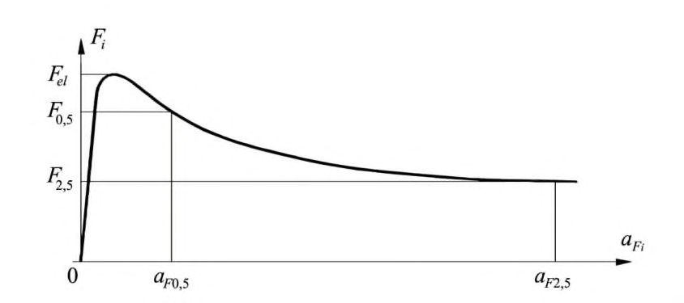
Б.3Образцы
Б.3.1 Испытательные образцы должны быть изготовлены в форме призмы (балки) со стандартными размерами: ширина b = 150 мм, высота h = 150 мм и длина L = 550 мм. Число образцов для испытаний - не менее 6.
Б.3.2 Испытательные образцы изготавливают и подготавливают к испытаниям согласно ГОСТ 10180 (раздел 4) и с учетом Б.3.3 и Б.3.4.
Б.3.3 Заполнять формы бетонной или сталефибробетонной смесью следует в порядке, приведенном на рисунке Б.2. Объем заполнения формы в центральной части (участок 1) должен быть равен суммарному объему заполнения участков 2 на рисунке Б.2. Первоначально форму следует заполнять приблизительно на 90 % высоты испытательного образца и уплотнить на виброплощадке. При формовании образцов из самоуплотняющейся сталефибробетонной смеси форма заполняется и выравнивается без вибрации.
1, 2 - этапы заполнения формы Рисунок Б.2
- Порядок заполнения формы
Б.3.4 Для выполнения надрезов в испытательных образцах применяют мокрую резку. Надрез следует производить посередине образца в повернутом на 90° вокруг продольной оси его положении (рисунок Б.3).
1 - верхняя поверхность бетонирования; 2 - надрез
Рисунок Б.3 - Расположение надреза, выполненного в испытательном образце
Ширина надреза должна быть не более 5 мм, глубина - (25 ± 1) мм, расстояние между вершиной надреза и верхней гранью образца при его испытании hsp - (125 ± 1) мм.
Надрез в образцах следует выполнять не ранее чем через трое суток с момента их изготовления и не позднее чем за 3 ч до испытания.
Б.4Подготовка испытательных образцов к испытанию
- Б.4.1 Ширину образца и расстояние между вершиной надреза и верхней гранью образца следует определять по среднему значению из двух измерений, выполняемых штангенциркулем с точностью до 0,1 мм.
- Б.4.2 Длину пролета образца следует определять на основании двух измерений расстояния по оси между опорными роликами с обеих сторон образца с помощью линейки с точностью 1 мм.
Б.5Проведение испытаний
- Б.5.1 В начале нагружения образца скорость перемещения активной траверсы испытательной машины следует принимать из условия обеспечения скорости приращения перемещений внешних граней надреза aF на 0,05 мм/мин, а после достижения перемещений внешних граней надреза значения aF = 1,0 мм - из условия обеспечения скорости приращения перемещений внешних граней надреза на 0,2 мм/мин.
- Б.5.2 Испытания необходимо проводить до достижения значения перемещений внешних граней надреза aF = 4 мм или до разрушения образца - в зависимости от того, что наступит раньше.
- Б.5.3 Результаты испытаний, в ходе которых образование трещин зафиксировано за пределами надреза, считаются недействительными.
Б.6Обработка результатов
Б.6.1 В ходе испытаний для каждого образца строят графики « F -aF » (рисунок Б.4).
Рисунок Б.4 График «нагрузка - перемещение внешних граней надреза»
Б.6.2 Для каждого образца определяют с точностью до 0,1 Н/мм² значения прочности RF 0,5 и RF 2,5 с учетом неупругих свойств сталефибробетона по формулам:
где F 0,5 - значение нагрузки, соответствующее перемещению внешних граней надреза aF = 0,5 мм;
2,5 F - значение нагрузки, соответствующее перемещению внешних граней надреза aF = 2,5 мм; l - длина пролета, мм; b - ширина образца, мм; hsp - расстояние между вершиной надреза и верхней гранью образца, мм; kF 0,5 = 0,4 и kF 2,5 = 0,34 -коэффициенты учета неупругих деформаций в сталефибробетоне растянутой зоны образца.
Б.6.3 Нормативные значения остаточной прочности сталефибробетона на растяжение определяют по формулам:
где RF 0,5, m и RF 2,5, m - средние значения остаточной прочности сталефибробетона на растяжение, Н/мм² ;
F 0,5, m и F 2,5, m - коэффициенты вариации, которые определяют по формулам:
здесь SF 0,5, m и SF 2,5, m - среднеквадратичные отклонения, которые определяют по формулам: где f - прогиб, мм; aF - значение, мм, которое:
- в случае, если расстояние у от оси датчика перемещений до нижней грани испытуемого образца равно нулю, принимают равным измеренному в процессе испытания значению;
- в противном случае - вычисляют по формуле
здесь h - полная высота образца.
Перевод графиков «нагрузка F -перемещение внешних граней надреза aF » производят путем преобразования оси aF , выполняемого с применением значений, приведенных в таблице Б.1.
n -число контрольных образцов-балок.
Б.6.4 В случае, если испытания контрольных образцов на осевое растяжение не производятся, класс сталефибробетона по прочности на осевое растяжение допускается назначать по результатам испытаний контрольных образцов-балок на изгиб в следующей последовательности.
Определяют для каждого образца с точностью до 0,1 Н/мм² значения прочности RFel по формуле
где Fel - максимальное значение нагрузки в интервале значений перемещения внешних граней надреза 0 < aF ≤ 0,05 мм; kFel = 0,6 - коэффициент учета неупругих деформаций в сталефибробетоне растянутой зоны образца.
Вычисляют нормативные значения прочности сталефибробетона на растяжение:
где RFel , m - среднее значения прочности сталефибробетона на растяжение, Н/мм² ;
Fel , m - коэффициент вариации:
здесь SFel , m - среднеквадратичное отклонение, определяется по формуле
Б.6.5 Если в процессе испытаний фиксируются только прогибы образца, связь между aF и прогибом f принимают в виде:
Таблица Б.1
| a F , мм | f , мм |
|---|---|
| 0,05 | 0,08 |
| 0,10 | 0,13 |
| 0,20 | 0,21 |
| 0,50 | 0,47 |
| 1,50 | 1,32 |
| 2,50 | 2,17 |
| 3,50 | 3,02 |
| 4,00 | 3,44 |
ВПриложение В. Определение сопротивлений сталефибробетона растяжению и сжатию с учетом влияния фибрового армирования
В.1 При определении значения расчетного остаточного сопротивления сталефибробетона растяжению Rfbt 3 различаются два случая исчерпания прочности на растяжение сталефибробетона.
Первый случай: сопротивление растяжению сталефибробетона исчерпывается из-за обрыва некоторого числа фибр и выдергивания остальных, что определяется условием
Второй случай: сопротивление растяжению сталефибробетона исчерпывается из-за выдергивания из бетона условно всех фибр, что определяется условием
В формулах (В.1) и (В.2) l f , an - длина заделки фибры в бетоне, обеспечивающая ее разрыв при выдергивании, определяемая по формуле
где df , red - приведенный диаметр применяемой фибры, мм;
Rf , ser - нормативное сопротивление растяжению фибр, МПа;
f - коэффициент, учитывающий анкеровку фибры.
Коэффициент f принимается равным:
0,8 - для фибры, фрезерованной из слябов;
0,6 - для фибры, резанной из стального листа;
0,9 - для фибры, рубленной из стальной проволоки.
При проектировании df , red принимается равным
где Sf - площадь номинального поперечного сечения фибры, определяемая по ее номинальным размерам.
В.2 При первом случае исчерпания сопротивления растяжению сталефибробетона значение Rfbt 3 определяется по формуле
где fb 1 - коэффициент условий работы, принимаемый равным 1,0 для фибры из слябов; 1,1 - для фибры из листа и фибры из проволоки; kor - коэффициент ориентации, учитывающий ориентацию фибр в объеме элемента в зависимости от соотношения размеров сечения элемента и длины фибры, принимаемый по таблице В.1;
fv - коэффициент фибрового армирования по объему;
КТ - коэффициент, определяемый по формуле
| Значение k or в зависимости от размеров сечения растянутого элемента при | Значение k or в зависимости от размеров сечения растянутого элемента при | Значение k or в зависимости от размеров сечения растянутого элемента при | Значение k or в зависимости от размеров сечения растянутого элемента при | Значение k or в зависимости от размеров сечения растянутого элемента при | Значение k or в зависимости от размеров сечения растянутого элемента при | Значение k or в зависимости от размеров сечения растянутого элемента при | Значение k or в зависимости от размеров сечения растянутого элемента при | Значение k or в зависимости от размеров сечения растянутого элемента при |
|---|---|---|---|---|---|---|---|---|
| h / l j | b / l f | b / l f | b / l f | b / l f | b / l f | b / l f | b / l f | b / l f |
| h / l j | 0,5 | 1 | 2 | 3 | 5 | 10 | 20 | Более 20 |
| 0,2 | 0,98 | 0,93 | 0,78 | 0,732 | 0,695 | 0,665 | 0,651 | 0,637 |
| 0,4 | 0,97 | 0,92 | 0,77 | 0,724 | 0,686 | 0,658 | 0,642 | 0,628 |
| 0,6 | - | 0,91 | 0,76 | 0,718 | 0,681 | 0,653 | 0,638 | 0,624 |
| 0,8 | - | 0,90 | 0,75 | 0,707 | 0,671 | 0,643 | 0,628 | 0,615 |
| 1,0 | - | - | 0,73 | 0,687 | 0,652 | 0,624 | 0,610 | 0,597 |
| 1,5 | - | - | 0,69 | 0,649 | 0,615 | 0,589 | 0,577 | 0,564 |
| 2 | - | - | 0,67 | 0,630 | 0,597 | 0,573 | 0,559 | 0,548 |
| 3 | - | - | - | 0,612 | 0,580 | 0,556 | 0,543 | 0,532 |
| 5 | - | - | - | - | 0,556 | 0,543 | 0,530 | 0,519 |
| 10 | - | - | - | - | - | 0,533 | 0,520 | 0,510 |
| 20 | - | - | - | - | - | - | 0,516 | 0,505 |
| Более 20 | - | - | - | - | - | - | - | 0,5 |
Примечание b и h - соответственно больший и меньший размеры сечения элемента (или его части), перпендикулярного к направлению внешнего растягивающего усилия.
- В.3 При втором случае исчерпания сопротивления растяжению сталефибробетона значение Rfbt 3 определяется по формуле
где fb 2 - коэффициент условий работы, принимаемый равным 1,0 для фибры из слябов; 1,1 - для фибры из листа и фибры из проволоки.
- В.4 Значения коэффициентов fb 1 и fb 2 в случаях применения прогрессивных технологий могут быть уточнены после экспериментального обоснования в соответствующем порядке.
- В.5 Расчетное сопротивление сжатию сталефибробетона Rfb определяется в зависимости от класса по прочности на сжатие бетона-матрицы, вида и размеров фибры, геометрии и размеров сечения элемента. При этом учитывается только работа фибр, ориентированных нормально к направлению внешнего сжимающего усилия и удовлетворяющих условию (В.1).
Значение Rfb определяется по формуле
где kn -коэффициент, учитывающий работу фибр в сечении, перпендикулярном направлению внешнего сжимающего усилия, и принимаемый по таблице В.2;
f - коэффициент эффективности косвенного армирования фибрами, вычисляемый по формуле
Таблица В.2
СП 360.1325800.2017
| Значение k п в зависимости от размеров сечения сжатого элемента при | Значение k п в зависимости от размеров сечения сжатого элемента при | Значение k п в зависимости от размеров сечения сжатого элемента при | Значение k п в зависимости от размеров сечения сжатого элемента при | Значение k п в зависимости от размеров сечения сжатого элемента при | Значение k п в зависимости от размеров сечения сжатого элемента при | Значение k п в зависимости от размеров сечения сжатого элемента при | Значение k п в зависимости от размеров сечения сжатого элемента при | Значение k п в зависимости от размеров сечения сжатого элемента при |
|---|---|---|---|---|---|---|---|---|
| h / l f | b / l f | b / l f | b / l f | b / l f | b / l f | b / l f | b / l f | b / l f |
| h / l f | 0,5 | 1 | 2 | 3 | 5 | 10 | 20 | Более 20 |
| 0,2 | 0,126 | 0,263 | 0,449 | 0,511 | 0,560 | 0,597 | 0,616 | 0,636 |
| 0,4 | 0,122 | 0,259 | 0,444 | 0,506 | 0,555 | 0,591 | 0,610 | 0,629 |
| 0,6 | 0,122 | 0,257 | 0,441 | 0,502 | 0,551 | 0,589 | 0,606 | 0,624 |
| 0,8 | 0,122 | 0,253 | 0,429 | 0,494 | 0,542 | 0,578 | 0,596 | 0,614 |
| 1,0 | 0,118 | 0,247 | 0,422 | 0,480 | 0,527 | 0,563 | 0,580 | 0,597 |
| 1,5 | 0,115 | 0,232 | 0,399 | 0,454 | 0,498 | 0,531 | 0,548 | 0,565 |
| 2,0 | 0,110 | 0,226 | 0,387 | 0,440 | 0,484 | 0,517 | 0,532 | 0,549 |
| 3 | 0,105 | 0,219 | 0,375 | 0,428 | 0,470 | 0,510 | 0,517 | 0,532 |
| 5 | 0,1 | 0,214 | 0,367 | 0,418 | 0,458 | 0,490 | 0,504 | 0,520 |
| 10 | 0,1 | 0,210 | 0,360 | 0,410 | 0,449 | 0,481 | 0,495 | 0,510 |
| 20 | 0,1 | 0,297 | 0,356 | 0,406 | 0,446 | 0,475 | 0,490 | 0,505 |
| Более 20 | 0,1 | 0,205 | 0,353 | 0,401 | 0,442 | 0,470 | 0,485 | 0,5 |
Примечание b и h - соответственно больший и меньший размеры сечения элемента (или его части), перпендикулярного к направлению внешнего сжимающего усилия.
- В.6 При расчете конструкций для определения значений Rfb и Rfbt коэффициенты kor и kn принимаются по таблицам В.1 и В.2, для отдельных частей сечения рассчитываемого элемента (верхней полки, нижней полки, стенки, ребра и т.п.), в зависимости от соотношения их размеров и длины фибры.
- В.7 При расчете по прочности сталефибробетонных конструкций фибровую арматуру следует принимать равномерно распределенной по сечению элемента с коэффициентом приведенного армирования по площади, определяемым по формулам:
- для растянутой зоны
- для сжатой зоны
где fa и fa μ - коэффициенты фибрового армирования по площади;
fv - коэффициент фибрового армирования по объему; kor и kn - коэффициенты, принимаемые соответственно по таблицам В.1 и В.2.